Font used: EPSON 教科書体Ｍ
Anki deck: Kanji Damage Plus +
Colour-codes:
Approximation of onyomi reading
Elements of the kanji (radicals/what makes it up)
Keyword
Important but doesn't fit other groups
言
GEN - You're going to say it again and again? It's not a koto dragon! (It's 'komodo')
say
ゲン
( と ) いう
こと
11計
KEI - You say you wanna measure it ten times? Okei
DESCRIPTION: Means "in total" or "total of something" (total hours, total pounds) when used as a suffix.measure
ケイ
はかる
18日
NICHI/JUTSU - Friedrich Nietzche spends every day doing ju jitsu
DESCRIPTION: This kanji has not one but two ON-yomis, and as if that wasn't enough, most of the jukugo don't use either of them! As a radical, it usually means "bright."sun, day
ニチ、ジツ
ひ
23旨
SHI - She can't really put her heels over the sun, but the gist is she's tall!
gist / delicious
シ
うまい
むね
24昆
KON - The sun shines down on the heels of multi-legged insects as they eat a pinecone DESCRIPTION: 「昆」 is a more formal and scientific term than the normal 「虫」
insect
コン
25唱
SHOU - The monk's mouth is chanting a hymn to show the non-believers that there are two suns
chant
ショウ
となえる
26旧
KYUU - One day I will re-unite with my cute former girlfriend DESCRIPTION: Prefix meaning -ex or former.
former
キュウ
28氷
HYOU - I only eat water drop ice cream (Yes, ヒョウ will be 'only' - doesn't really correspond with anything so might as well be this - kinda like 'hyounly')
ice
ヒョウ
こおり
35泊
HAKU - Make the white devils spend the night in the rain (water), see if they can hack it DESCRIPTION: Counter for nights of a stay.
stay for the night
ハク
( に ) とまる
( を ) とめる
38月
GETSU - The United States had to get to the moon before the Russians You got to leave in January, if you want your rocket to get to the moon
moon / organ
ゲツ
つき
41胆
TAN - The daring husband went to the moon for a tan. Now that takes some gall(bladder) DESCRIPTION: No, you won't be saying 'gallbladder' very often, but you still need this kanji to describe daring daytime bank robberies or mad ninja feats: Americans say "That takes balls," but Japanese apparently say, "That takes gallbladders!"
gall bladder / daring
タン
45朝
CHOU - Maggy Chou complains she can't see the moon at ten in the morning. I told her to get up earlier
morning
チョウ
あさ
46可
KA - It's possible to get a car for cheap, if you cram a nail right into the mouth of the salesman!
possible
カ
53町
CHOU - Maggy Chou goes to her neighbourhood rice paddy to get her nails done
neighborhood, town
チョウ
まち
57畑
They burn the field to clear it, then they plant crops. So they have a cultivated field
cultivated field
( ｘｘｘ ) はたけ
58入
NYUU - I take my new knife and put it in your left side, damn newb!
put in / go in
ニュウ
( に / を ) いれる
( に / が ) はいる
60化
KA - If that person puts his heel all the way down, the car will transform
transform
カ
( が / に ) ばける
64円
EN - If you enjoyed George Michael's Moustache, please tip him one Circular Yen
yen / circle
エン
まるい
72市
SHI - Since she lives in a small city, she carries a dagger for protection
small city / dagger radical
シ
73冒
BOU - It's risky to look at the sun with your eyes as you might not be able to bowl again
risk
ボウ
(を) おかす
77亭
TEI - George Michael will only take me to a restaurant if I pierce my mouth with a nail and wear a tophat
restaurant
テイ
81停
TEI - A person at the take-away restaurant was braught to a halt as he tried to leave without paying
bring to a halt
テイ
82訪
HOU - Go in the direction of the ho'. Say you're there for a 'formal visit'
formal visit
ホウ
たずねる
おとずれる
86妨
BOU - The stern woman prevents you from going in the direction of the bowling alley
prevent
ボウ
さまたげる
87肪
BOU - Your mama's so fat, bowling balls are pulled in the direction of her body by gravity DESCRIPTION: 「肪」 actually refers to the fat in food, not as in fat person
fatty food
ボウ
88文
BUN/MON - Take that tophat off your crotch, you're about as cultured as a bunch of monkeys! I sentence you to death!
culture / sentence
ブン、モン
92斉
SEI - If you say the same thing in unison with everyone else, you can move up the culture ladder
unison
セイ
93済
SAI - Water moving in unison can be siphoned by electric dams to power the economy, which is almost over and done with DESCRIPTION: Literally and by itself it means to be over, but when used in a Jukugo it USUALLY has something to do with economy.
economy / to be over
サイ
( を ) すます
( が ) すむ
94心
SHIN - Martin Sheen has a loving heart
DESCRIPTION: Kanji containing these radicals have something to do with emotions.heart
シン
こころ
98忘
BOU - If you forget to turn on your pacemaker, you will die of a heart attack while bowling
forget
ボウ
わすれる
106妄
MOU - Mickey Mouse caused a woman to die without reason or permission
without reason or permission
モウ
108慢
MAN - The egotistical man neglected his heart and decided to lie in his hammock (NET) and let the sun shine on his crotch instead DESCRIPTION: 90% of the words using this kanji mean egotistical, neglectful or even chronic.
neglect / egotistic
マン
110漫
MAN - Picture a man using a net to haul old manga out of the water and dry them on his crotch in the sun so he can read them
manga
マン
111亜
A - A Roman soldier keeps II nets, a main net and a sub-net
DESCRIPTION: Prefix meaning sub- among other things. But you don't have to worry about this, it's only useful in some obscure compound words and as a radical.sub-
ア
112夢
MU - Last evening I had a dream that George Michael was singing music inside a net of flowers
dream
ム
ゆめ
116夜
YA - If ya see a person in the evening or late at night wearing a tophat and dripping with blood (dot) it's Jack the Ripper!
late night
ヤ
よる
117液
EKI - Late at night, I stepped in some icky liquid substance.. I hope it was water, but..
liquid
エキ
118外
GAI - The guy stuck his toe outside in the evening (seeing if it was cold or not)
outside
ガイ
そと
はずれる
122卓
TAKU - KimuTaku (Takuya Kimura) gets to the table early and stretches his toes into the salad bowl
table
タク
124占
SEN - Send for a fortune teller, whose mouth will tell the future of my toe
fortune-telling / occupy
セン
うらない
しめる
125点
TEN - My fortune teller says that by staring into ten flames, she can see any point in the future DESCRIPTION: Means both literal dot/point and point of conversation.
point
テン
126宅
TAKU - KimuTaku (Takuya Kimura) returns to his residence, puts on his crown, kicks up his heels and watches himself on TV for one hour
residence
タク
128安
AN - I bought a crown from a woman named Ann for cheap, so I hope it was a safe buy
cheap / safe
アン
やすい
129宣
SEN - One would like to announce that one's husband is senile and can no longer be crowned king
announce
セン
131喧嘩
KEN - Ken can fight with Ryu, even if it's just a verbal fight about their husbands
fight / quarrel
ケン
やかましい
132沿
EN - The mouths of eight thirsty people are lined up in parallel on the water's edge, waiting to enjoy some water
run parallel to
エン
( に ) そう
136台
DAI/TAI - I tie you to your car and the big moo-moo eats you with its mouth and you die
big thing counter / platform
ダイ、タイ
140始
SHI - I've just begun to date a big sized woman, and she is amazing
begin
シ
( を ) はじめる
( が ) はじまる
142怠
TAI - Thai people are not lazy, they have big hearts - the size of TVs! Or even cars!
lazy
タイ
( が ) なまける
( を ) おこたる
143仏
BUTSU - Buddha is a person who pulled his boots up and went off to tell the world of the sacred cow
buddha
ブツ
ほとけ
147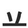
standing worms
148立
RITSU - Two worms stand up and from the ground, don their top hats and hit the Ritz casino
stand up
リツ
( を ) たつ
( が ) たてる
149辛
SHIN - Martin Sheen stood and ate spicy food for 10 minutes.. that was painful
spicy / painful
シン
からい
つらい
150 Martin Sheen stood and ate spicy food for 10 minutes.. that was painful幸
KOU - I get happiness and luck from eating just one hot spice, but it's bad for my colon
luck, happiness
コウ
しあわせ
さいわい ( に )
151宰
SAI - The manager of the spicy Indian restaurant sighs as even he has to wear the goofy crown
manager
サイ
152章
SHOU - Stand up early and show me your badge
DESCRIPTION: Literally means "badge" or "emblem", but usually is used in the context of "sentence" or "chapter."badge / chapter
ショウ
156闇
AN - It's pitch black so you'll have to find an elephant by using sound. Hint: it's through that gate
pitch-black darkness
アン
やみ
162間
KAN - It can take a period of time of up to a day for the gate to open DESCRIPTION: Suffix used to mean period of time, e.g. 「一年間」 means period of one year
a period of time
カン
あいだ
ま
163問
MON - The Monk at the gate asks you a question which you must answer without opening your mouth. Now, that's a problem!
question, problem
モン
と・う
164切
SETSU - He said to me that he'll cut me seven times with his katana
DESCRIPTION: Literally and by itself it means "cut", but in Jukugo, it tends to mean "important" or "especially."cut / important
セツ
きる
きれる
166召
SHOU - To summon the demon sword, you must yell "Show yourself!" and it will come out of your mouth
summon
ショウ
めす
167照
SHOU - The fire of the Showa era shows the contrast between old Japan and modern day Japan
contrast
ショウ
( を ) てらす
( は ) てれる
169分
BUN/FUN - Eight bunnies with katanas understand how to have fun for a minute
understand / divide / minute
フン、ブン
( を ) わかる
( を ) わける
170剤
ZAI - This type of medicine is like microscopic swords all attacking germs in unison! It's sold by the Zaibatsu corporation
type of medicine
ザイ
171罰
BATSU - If you say something bad, you'll be caught with a net and punished with baseball bats and swords
punishment
バツ
ばっする
172忍
NIN - The ninja has to hide well and endure discomfort with a steady heart in order to stab his target with his blade
hide / endure
ニン
しのぶ
174認
NIN - A ninja always says the truth, admits his crime and endures the consequences
admit
ニン
みとめる
175協
KYOU - Kyouko said that three strong people cooperating have the strength of ten people working alone
cooperate
キョウ
178熟
JUKU - The child on the jukebox with the tophat got good at opening her round mouth and emitting fire from it
get good at
ジュク
うれる
185劣
RETSU - The small inferior guy lets on he is stronger than he really is
inferiority
レツ
( ガ / に ) おとる
189省
SHOU - The ministry had to cut down on the shows it hosted on little eye disection (Too gross!)
ministry / cut down on
ショウ
はぶく
191京
KYOU - Kyouko donned her tophat and put lipstick on her little mouth before heading off for the capital of Japan
capital
キョウ
192景
KEI - When the sun shines on the capital city of the Cayman island it's really quite scenic
scene
ケイ
194宗
SHUU - God wears a crown to show you that he is the king of religion, and he'll shoot you if you disagree
religion
シュウ
196寂
JAKU - The lonely man, Michael Jackson pretended to drop his crown, and when he bent over to pick it up, he looked up skirts to see the small crotches inside.
lonely
ジャク
さびしい
197督
TOKU - The supervisor's eye looks up at the small crotch of the token Asian girl
supervisor
トク
198玄
GEN - Eazy donned his tophat and walked through the entranceway, trying to seem mysterious as he ate brown rice again and again
entryway / mysterious / brown rice
ゲン
201蓄
CHIKU - The farmers set aside both their flower crop and breeding chicks for the winter
put aside
チク
たくわえる
203糸
ITO (KUN) - Eazy has a small string which he likes to play with and it only costs $1
string
いと
204紹
SHOU - If I summon or show you someone, you might become acquaintances and be connected by a social string
acquaint
ショウ
205細
SAI - I sigh because I can't get any more slender unless I run around Stringfield every day
slender
サイ
こまかい
ほそい
208総
SOU - I'll give so much string to the general public, I'm sure to totally win their hearts
DESCRIPTION: Can be used as a prefix to mean general or whole, e.g. 「総員」 means all hands or all the members.general / total
ソウ
209索
SAKU - I'll look up George Michael in ten years and ask him about the string he tied around his sack
look up
サク
210納
NOU - I'm going to supply you with my special nautical insider string, top secret stuff
to supply
ノウ
( が ) おさまる
( を ) おさめる
211紛
FUN - String theory is too ambiguous to understand but it's fun to think about for a minute
ambiguous
フン
まぎらわしい
( に ) まぎれる
212系
KEI - one string ties the chaos tribe
DESCRIPTION: Prefix which refers to a group or lineage of people, e.g. 「ヴィジュアル系」 means visual-kei (Japanese rock indies style).tribe, system
ケイ
214用
YOU - George Michael yawns as he utilizes his hair dryer DESCRIPTION: Can be used as a suffix to mean something is intended for the use of something, e.g. 「男子用」 means for men, 「印刷用」 means for printing.
utilize
ヨウ
もちいる
219宇
U - You need a dry, soundproof helmet (crown) to traverse the cosmos because it's so urusai
cosmos
ウ
223話
WA - If you have a tongue you can say what you want in conversation
conversation
ワ
( と ) はなす
はなし
226憩
KEI - It's Okei to take a break at work, catch your breath and talk to co-workers with your tongue
take a break
ケイ
いこい
229判
HAN - Han Solo sealed half of his sword inside adamantite DESCRIPTION: This means seal or stamp with the official stamp that makes something official
seal / stamp
ハン
231伴
HAN/BAN - Han Solo was the person banned for accompanying half the wookies to the men's room
accompany, bring with
ハン 、バン
( に / を / が ) ともなう
232平
HEI - Hey~ what level is half? It has to be equal! 2 more drops into the middle and we are even
equal / level
ヘイ
たいら ( な )
233呼
KO - I call kodomos with my mouth and they call me back equally as loud
call to someone
コ
( を / に ) よぶ
( に ) よばれる
235埋
MAI - I bury my family in the earth of the same village where we were born
bury
マイ
( を ) うめる
( が ) うもれる
242塾
JUKU - The Jukebox kid (firebreather) has to come down to earth some day and go to cram school. (To make up for all the wasted firebreathing days!)
cram school
ジュク
245士
SHI - She wanted to be a Samurai but her arms weren't long enough DESCRIPTION: It is never used by itself, but it means "violent or socially respected job."
samurai radical
シ
246吉
KICHI/KITSU - It's considered a good omen if a kitchen samurai kisses a fox (狐 = kitsune) on the mouth
good omen
キチ、キツ
249詰
KITSU - It's a good omen to say you want to cram in Fox News with facts, not fiction
cram in
キツ
( を ) つめる
( が ) つまる
250結
KETSU - It's a good omen to bind your ketchup bottle with string - it means you can't spill it!
bind
ケツ
むすぶ
251耂
DESCRIPTION: Because it's like the ground radical 「土」, but the ground is all spinning: One minute it's straight, the next minute it is tilted.
dizzy
253老
ROU - When I get old I won't be able to row without getting dizzy, so now I spin on my heel to prepare
get old
ロウ
( が ) おいる
254孝
KOU - Out of filial piety, the child donates his colon to his parent but the operation leaves him dizzy
filial piety
コウ
255者
SHA - The professional shall work all day until they get dizzy! DESCRIPTION: 「しゃ」 reading is a suffix, which means someone of that nature or someone doing that work, e.g. 「記者」 means reporter. 「もの」 however is reserved for "person", e.g 「バカ者」 means stupid person.
professional
シャ
( ｘｘｘ ) もの
256緒
SHO - The professional string instrument player plays together with his band on the shore
together
ショ
258煮
SHA - The professional cook shall always simmer food using fire, not a damn microwave
simmer / stew
シャ
( を ) にる
( が ) にえる
262隹
DESCRIPTION: This is much more complex than most radicals. On the good side, though, it is so common that you can't NOT learn it.
turkey
263焦
SHOU - Don't show anyone the charred turkey that you were too impatient to cook over the fire
char / impatient
ショウ
( を ) こがす
( が ) こげる
264無
MU - You can't say moo without a cow! 無理！ DESCRIPTION: 「む」 reading is used as a prefix to mean non-, un- or nothing, e.g. 「無音」 means soundless.
without
ム
( ｘｘｘ ) ない
265維
I - I am responsible for the upkeep of this turkey, so I always keep a string tied around his neck so he can't run away
upkeep
イ
266馬
BA - A sheep goes bahh, but a horse goes umaaa. A turkey goes gobble gobble This is turkey + 4 dots so you can basically say.. a horse is basically a giant turkey with 4 hooves.
horse
バ
うま
271足
SOKU - A mouth yelling "Stop right now and put a damn sock on your foot!" (He stops and puts the sock on: That is sufficient)
foot / be sufficient
ソク
( が ) たりる
あし
278促
SOKU - Peer pressure is when you wear the same socks on your feet as the person you want to be like
peer pressure
ソク
うながす
279踏
TOU - The toes of my feet were tread on and I spent all day with my foot in water to heal them
tread on
トウ
ふむ
280歪
WAI - Why did your gums get distorted into an un-correct shape by the engine?
distort
エ / ワイ
( が ) ゆがむ
285超
CHOU - Maggy Chou got summoned to run exceedingly fast DESCRIPTION: This means to exceed a numerical value. Not like exceed one's patience or my band exceeds your band.
exceed / go over
チョウ
( を ) こす
( を ) こえる
287駅
EKI - Ride your horse to the train station to hear some excellent rock music played by buskers outside
train station
エキ
289訳
YAKU - I have no reason to translate what this rock song is yacking on about. It's saying nothing interesting
reason / translation
ヤク
わけ
291描
BYOU - Using my fingers to pick flowers from the rice field depicts me as someone who stinks of B.O
depict
ビョウ
かく
296提
TEI - For sure I will take your proposal in my hand all the way to the president! DESCRIPTION: Also means "make an offering".
submit a proposal
テイ
297指
SHI - She points with her finger to emphasise the gist of her argument. You believe me now?
finger / point at
シ
ゆび
さす
300拐
KAI - The kidnapper held a blade to the victims mouth and tied her hands, then escaped with a big kite
kidnap
カイ
303担
TAN - My husband used his hands to carry me on his back so he didn't get a tan there
carry on your back
タン
になう
かつぐ
304接
SETSU - I said to him that I've never stood in direct contact with a woman, nevermind touched one with my hands!
directly contact
セツ
305拍
HAKU/HYOU - White folk only clap their hands when a kitten is hacked to pieces.. barbarians
clap
ハク、ヒョウ
306挿
SOU - To harvest so much grain, a thousand farmers had to insert their hands into a rice field
insert
ソウ
さす
307看
KAN - Genghis Khan observes you with his eye while holding you in his hands to guard you
observe / guard
カン
308取
SHU - The pervert cameraman only takes close-ups of ears and crotches, especially when he can see her underpants
take
シュ
とる
310撮
SATSU - At the photo-shoot, most of the pictures were of the model's hands holding satsumas
photo-shoot
サツ
とる
312恥
CHI - I got embarrassed when she put her ear to my heart and I cheesed myself
embarrassed
チ
はずかしい
はじ
314聞
BUN - Use your ear to listen to the bunnies hopping through the gate
listen
ブン
( を ) きく
( が ) きこえる
315丘
KYUU - He said my buttocks are like cute little hills of flesh, then sliced one of them off with an axe
hill
キュウ
おか
318哲
TETSU - The philosophy that comes from Confucius' mouth is powerful enough to bend iron (鉄 = TETSU)
philosophy
テツ
319簡
KAN - Growing bamboo is so simple even Genghis Khan can do it in a short period of time
simplicity
カン
324辺
HEN - I saw a hen moving around here with a sword (Samurai hen sighting)
around here / around that time
ヘン
あたり
(ｘｘｘ) べ ( に )
330迫
HAKU - I move towards the white guy and press upon him about the hacking issue
press upon
ハク
( を / に ) せまる
331達
TATSU/TACHI - I was taught to use plurals correctly, therefore I am touchy when people deliver them wrongly (Happy Grammar Nazi on the move)
plural / delivery
タツ、タチ
333進
SHIN - Martin Sheen keeps track of the moving turkey's progress
progress
シン
( を ) すすめる
( が / へ ) すすむ
334述
JUTSU - 'Sexy no Jutsu' refers to Naruto's special move, transforming into a ho' dripping with sweat
refer to
ジュツ
のべる
335木
MOKU - Smoking trees is more cool than smoking cigarettes DESCRIPTION: If you see an unknown kanji that has tree in it, chances are around 33% that it actually has something to do with wood! That's right, I counted.
tree
モク
き
336本
HON - The honorable tree gave its life to make one real book
DESCRIPTION: Counter for long cylindrical things, used like this 「いっぽん」. Also used as a prefix to mean real, e.g. 「本物」 means genuine or the real thing (and not fake).book / real
ホン
339枠
I wacked together a picture frame out of 90 trees. I really pushed the limit on size
frame / limit
わく
342策
SAKU - George Michael took measures to protect the bamboo trees from getting ransacked
take measures
サク
344刺
SHI - She used her sword to stab George Michael but his wooden business card saved him
stab / business card
シ
( を ) さす
( が ) ささる
345集
SHUU - Turkeys gather at the top of trees, where hunters can shoot them
collect / gather
シュウ
( を ) あつめる
( が ) あつまる
347棚
HOU - A shelf made of wood that is strong enough to hold two moons
氷棚 (ひょうほう) = Ice Shelf! (Think Antarctica)shelf
ホウ
たな
348想
SOU - I am so imaginative that I thought of an idea on how to fix my partner's broken heart
idea / imagination
ソウ
353果
KA - I crashed my car into a tree in the fruit field, resulting in a fractured skull
fruit / result
カ
はたす
355課
KA - The section chief says you have a fruity car. That'll teach you a lesson! DESCRIPTION: This means "section" as in part of an organization. Occasionally it means "lesson", as in "section of a book you have to learn."
section, lesson
カ
356菓
KA - Sweets are made with honey from flowers and fruits, then transported by car to the factory
sweets / pastry
カ
357膝
SHITSU - Water gathers on the sheets of wood of the peaked roof (will cover later) and reflect the moon. I kneel down to get a closer look
knee, lap
シツ
ひざ
362保
HO - I guarantee that a hairy obese person can eat a tree in one mouthful
guarantee / maintain
ホ
たもつ
363繰
I have a spinning top, made from wood, and when I pull the string it spins! It's a nice product
繰り返し - くりかえし - repetition; repeatedly (over and over)spin
くる
364操
SOU - Her fingers are so much better than any wooden product at manipulating her chastity....? OK
manipulate / chastity
ソウ
あやつる
みさお
365雑
ZATSU - We found nine miscellaneous turkeys in a tree.. Now, that's random!
miscellaneous, random
ザツ
367未
MI - The tree is not yet perfect for me, I'm waiting for the top branch to fully grow
not yet
ミ
まだ
382断
DAN - Dan decided to judge the loser of the rice eating competition by refusing to give him the complimentary axe
decision / judgement / refuse
ダン
ことわる
たつ
388継
KEI - It's OK to inherit a ball of string and a bag of rice from a loser
succeed / inherit
ケイ
つぐ
389粘
NEN - The fortuneteller predicts rainen (来年 = next year) by throwing rice and seeing what it sticks to
be sticky
ネン
( が ) ねばる
390菜
SAI - I sigh as I must get the vegetables from the flowery birds nest atop the tree
vegetable
サイ
391番
BAN - A band came from the future and played their number one song in our rice field
turn / number
バン
396奥
George Michael dropped a big kernel of rice way in the back of his moustache
way in the back
おく
399寄
KI - The strange king (crown) doesn't like people getting close to his keep
get close
キ
( が ) よる
401奮
FUN - The big turkey had fun and got all worked up running around the rice field
get worked up
フン
403器
KI - Keep the products in big boxes so they don't get damaged! They are delicate instruments!
instrument
キ
うつわ
404映
EI - The sun reflects off the center of Fonzie's (eyy) head as he is now old and bald, he doesn't project his cool image anymore
project, reflect
エイ
( を ) うつす
( に ) うつる
407英
EI - People threw flowers at the hero Fonzie as he triumphantly walked down the central road
heroic / English
エイ
408伏
FUKU - I'm not really a dog person. They always just seem to lay face down and get hair on my fuku (服)
lay face down
フク
ふせる
410太
TAI - If the big fat guy doesn't drop some weight his pants will always be tight
fat
タイ
ふとる
ふとい
414嘆
TAN - Your mouth laments that you have to learn Chinese kanji when you are just trying to get a tan in Japan!
lament, sigh
タン
なげく
420因
IN - The origin of the universe was in a big bang, because a large amount of energy burst out of a microscopic box
origin
イン
429菌
KIN - The wheat box is covered in bacteria and has weed flowers growing from it, which my kinfolk roll up and smoke
bacteria
キン
431囚
SHUU - A person stole some shoes and got thrown in a big box of a cell - now he's a prisoner
prisoner
シュウ
433回
KAI - When my kite rotates it shows a box within a box illusion DESCRIPTION: Literally, it means to rotate. However, mostly you'll see it used used as a counter for occurrences, e.g. 「一回」 means one time.
rotate / -times
カイ
( を ) まわす
( が ) まわる
434個
KO - That kodomo is a hard person to deal with individually
DESCRIPTION: Doesn't usually mean 'individual' like special, but more like 'private' or 'single-serving'. Also used as a counter for small (often round) objects.individual
コ
436任
NIN - Ninjas are the people responsible for guarding the king
have responsibility for
ニン
( を / に ) まかせる
まか・す
445望
BOU / MOU - The king desired to go bowling with Mickey Mouse before dying of organ failure (Make a wish foundation)
desire / wish
ボウ、モウ
のぞむ
のぞみ
448程
TEI - The king would take the wheat from our mouths; that's the extent to which he cares for his own people
extent
テイ
ほど
450主
SHU - The master king can make her drop what she's doing and show her underpants
master / mainly
シュ
おも ( に )
ぬし
451契
KEI - It's OK to kill your master with a big sword because big Tony has a contract on him
contract
ケイ
452喫
KITSU - Fox Hound members have a contract to enjoy a drink and smoke with their mouth after completing a mission
enjoy a drink and a smoke
キツ
453注
CHUU - Carefully pour the master's water or he won't choose you as his bride
pour / be careful
チュウ
そそぐ
455害
GAI - That guy punched the master right in the mouth, damaging his crown in the process.
damage
ガイ
459割
KATSU - He damaged the cats with the sword, dividing them in two DESCRIPTION: Most jukugo that look like they should be pronounced KATSU will not only wind up being pronounced WARI, but the RI won't be even written down. Be careful.
divide
カツ
( を ) わる
( が ) われる
460憲
KEN - Ken Masters nets the hearts of his fans by wearing his consitutional crown
constitution
ケン
462晴
SEI - They say a blue sun means the weather will get good now
weather get good now
セイ
( が ) はれる
467生
SHOU - Say you'll show me the life and birth of a great rifle master!
life / birth
セイ、ショウ
( を ) いきる
( が / に ) うまれる
470性
SEI/SHOU - I'll give you my heart and life if you say you'll show me how to have sex! DESCRIPTION: Suffix which denotes the gender AND nature of a person or thing (-ty). For example, 「創造性」 means creativity and 「夜行性」 means nocturnal habit.
sex / essential nature
セイ、ショウ
472朱
SHU - My rifle is not yet ready to shoot. The signal is when she shows her underwear, the vermillion underwear
vermilion
シュ
474株
SHU - She will show her underwear when I stock up on vermillion trees (she can't resist them!)
share, stock
シュ
かぶ
475遊
YUU - Let's play a game~ it's called "You move in the direction of the child with a rifle"
play around
ユウ
( で / と ) あそぶ
476称
SHOU - I'm showing you how to use a small rifle to blow wheat into symmetrical chunks
symmetry
ショウ
477乙
OTSU - Oh, two girls are ranked second? Number 2? DESCRIPTION: Means second rank, second (party to an agreement), the B party (e.g. in a contract), the latter or whatever
second rank / girl
オツ
478乾
KAN - Genghis Khan's dry throat gets mighty thirsty after shooting two rifles all morning
dry, thirsty
カン
( を ) かわかす
( が ) かわく
479毒
DOKU - My mom goes to the dock to get her poison from the master drug dealer.. She's a meth addict
poison / addict
ドク
481中
CHUU - The tongue (line), in the middle of your mouth, helps you chew
DESCRIPTION: It means the physical middle of something. Also used as a suffix attached after nouns to mean in the middle of doing something, e.g. 「電話中」 means during a telephone call or busy line.middle / inside
チュウ
なか
487仲
CHUU - The person you choose to form a friendship with becomes central to your life
friendship
チュウ
なか
490虫
CHUU - Put some bugs in the middle of your mouth and chew. Later use their stinger as a toothpick
bug
チュウ
むし
491蛇
JA / DA - A snake like bug bit the crowned king on the heel. It was a dangerous jab
snake
ジャ / ダ
へび
492騒
SOU - The horse made so much noise when all its crotch-bugs bit it at once
make noise
ソウ
( に ) さわぐ
494尸
DESCRIPTION: Textbook calls it corpse, but zombie is more memorable. The left part is the body and the right is their arms out to grab you.
corpse / zombie
495属
ZOKU - George Michael is affiliated with pirates (かいぞく) and has donated one insect corpse to them
genus / affiliation
ゾク
496居
KYO - A living zombie is just an old corpse. Keep your odor to yourself and they won't spot you!
live
キョ
いる
497刷
SATSU - That satsuma colored hardback is an old print about corpses, daggers and swords
サツ
502房
BOU - in the direction of bowling alley doors you can see cluster of wives (to stop their husbands from going there)
wife / cluster
ボウ
ふさ
507戻
He returned through the same big door that he came in from
return, go backwards
( を ) もどす
( が ) もどる
508革
KAKU - Michio Kaku studied the middle of one of the revolutionary leather bunnies
(Arbitrarily KAKU will be ACOUSTIC because KOKU is already COCK - AKU is ACCUSE so different than ACOUSTIC)leather / revolution
カク
かわ
513某
BOU - A certain bowling ball has a sweet tree growing from it DESCRIPTION: A prefix meaning "certain" that can be put before any noun, e.g. 「某国」 means certain country.
a certain
ボウ
なにがし
516寛
KAN - Ghengis Khan looks as lenient as a crown wearing bunny but he's a fierce beast inside
leniency
カン
520焼
SHOU - I'll show you the ten roasted bunny legs cooking on the fire
roast / grill
ショウ
( を ) やく
( が ) やける
521現
GEN - The king looks at the present situation and wishes he had the chance to do it all over again
present time
ゲン
( を ) あらわす
( が ) あらわれる
523親
SHIN - Shinji stands at the top of the tree looking for his kind parents
parents / kindness
シン
おや
したしい
524兄
KYOU / KEI - Kyouko ate my older brother's cake so he slapped her mouth and broke her legs
older brother
キョウ、 ケイ
あに
( お ) にい ( さん )
525児
JI - Jesus had formerly healed the baby's broken legs
DESCRIPTION: A more formal kanji than 「子」.baby
ジ
529貝
The shellfish has big eyes and small legs, but no damn money
DESCRIPTION: By itself it means shellfish, but when combined with another kanji to form a compound word, it means "money."shellfish / money
かい
531憤
FUN - Ten flowers and a shellfish necklace aroused her heart and they had fun all night long
aroused / get indignant
フン
いきどおる
533貧
BIN - I've never had money even for a minute, I'm so poor I have to eat from trashbins
poverty
ビン
まずしい
536賃
CHIN - The responsibility of paying the rent money is like a painful blow to my chin
rent money
チン
540員
IN - There's a shellfish in the clerk's mouth
DESCRIPTION: 「員」 is a suffix which goes after any word to mean "employee" or "member".clerk
イン
543損
SON - The clerk's hand harmed my son when she slapped him DESCRIPTION: 「ソン」 means loss or disadvantage by itself.
harm
ソン
そこなう
544側
SOKU - That person makes it a rule to walk in his socks on the sidewalk DESCRIPTION: This is almost always used with the KUNyomi, even in jukugo!
side of something
ソク
かわ
546績
SEKI - I was condemned by my wife for having a section of the house dedicated to my string of achievements
achievements
セキ
551積
SEKI - I was condemned for having a section of my barn pile up with wheat
pile up
セキ
( を ) つむ
( が ) つもる
552兵
HEI - Hey, there's a soldier eating some animals legs on that there hill over yonder
soldier
ヘイ
555魚
GYO - Get your own fishhook from the fire on the field there, then you can catch some fish
fish
ギョ
さかな
559pi
DESCRIPTION: It looks like the sign for 3.141592653589, but let's think of it as symbolizing an actual pie, because making a mnemonic out of an imaginary number is hard work for me.
pi
562thick pie
DESCRIPTION: like regular PI, but thicker and more flavorful. That's right -- I'm talking about TOPPINGS.
thick pie
563売
BAI - The samurai is selling a nice thick pie. Do you want to buy it?
sell
バイ
( を ) うる
( が ) うれる
564窓
SOU - The moo cow's heart was thrown so hard it put a hole in the window
Usually just まどwindow
ソウ
まど
567探
TAN - I'm looking for the best place to tan my hands and I heard that 'Thick Pie Tree Ridge' is the best place
look for
タン
さがす
568元
GEN - There is only one original generation of pie, the rest are fakers DESCRIPTION: 「もと」 reading is used as a prefix to mean ex- or former.
original
ゲン
もと
571西
SEI - In the Old West it was not considered rude to say things with one's mouth full of pie
west
セイ
にし
573標
HYOU - The only good sign is that a tree fell on the ballot voters.. that left a mark alright
sign, mark
ヒョウ
575酒
SHU - If she drinks watered down western alcohol, you can see her underpants
alcohol
シュ
( お ) さけ
577酔
SUI - In the west, nine out of ten people get drunk on alcohol because of its sweet taste
drunk
スイ
よう
578要
YOU - The straight up western woman yawns as someone tells her important news
important
ヨウ
ようする
かなめ
580腰
YOU - Yawning is important for organ maintenance, especially around the waist area
waist
ヨウ
こし
581煙
EN - This here is straight up western earth yo' we don't enjoy no smoky fires here
smoky
エン
けむい
けむり
582オ
USED IN: 材 財 閉 DESCRIPTION: Because it comes form the katakana "O" which you are no doubt familiar with
Oprah
583財
SAI/ZAI - All the money goes to Oprah. The bitch has loot! Some seriously sizeable xylophones and everything!
loot
サイ、ザイ
584夫
FU/FUU - Peter Griffin is one big husband who is fucked up and full of himself
husband
フ、 フウ
おっと
587替
TAI - Let's tie our two husbands together for the day and find some substitute ones
substitute
タイ
( を ) かえる
( が ) かわる
589潜
SEN - Instead of lurking in the water, have some sense and do it on land
lurk
セン
( が ) ひそむ
( に ) もぐる
590規
KI - The key criteria my husband is looking for is someone with an interest in the subject
criteria
キ
591挟
KYOU - Kyouko pinches her husband with her fingers so hard that 2 drops of blood come out
pinch, between
キョウ
はさむ
592獣
JUU - The Jews took one baby bird from the rice field and threw it into the dog's mouth, those beasts!
beast
ジュウ
けもの
598消
SHOU - I'll show you how to erase ink using only water and carrots
erase
ショウ
( を ) けす
( が ) きえる
601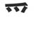
DESCRIPTION: Three baby birds, with a roof over their heads, constitutes a nest!
nest
602浮
FU - It's fucked up to put a child in a nest and float him out into the open water
float
フ
( が ) うく
( が ) うかれる
603受
JU - George Michael received some juicy underwear with a bird's nest design that he now wears on his crotch
receive
ジュ
うける
604授
JU - The students receive instruction from the hand of the teacher on which juicy underwear to wear in class
instruct
ジュ
さずける
606採
SAI - The nest I gathered from the tree slipped through my fingers and fell.. /SIGH!
gather
サイ
とる
607久
KYUU - It's been a long time since I kissed the kuchi of a cute person
been a long time
キュウ
ひさしい
608各
KAKU - Michio Kaku studies each mouth he sees DESCRIPTION: You can put 「各」 in front of a noun to make it mean each or every (e.g. each place).
each
カク
おのおの
609条
JOU - Joe Stalin nicely included a clause in the Soviet constitution where each comrade got a tree shoved up their butt DESCRIPTION: Also means article in a document, e.g. 「９条」 means Article 9
clause
ジョウ
617酸
SAN - Each of Santa's western moo-cows were genetically engineered to have strong animal legs which left a sour taste in the mouth of animal rights activists
sour
サン
すい
619携
KEI - It's OK to grab a turkey and carry it in your grasping-hand
carry in hand
ケイ
( に ) たずさわる
624及
KYUU - I slashed my cute thumb so I can't exert too much energy.. can you reach that for me?
reach / exert
キュウ
( が ) およぼす
( ｘｘｘ ) および ( ｙｙｙ )
625穏
ON - The tranquil looking birds nest made of wheat actually has a pig's snout and heart on the inside!
tranquil
オン
おだやか ( な )
630侵
SHIN - Martin Sheen violated the crotch of a person called George Michael with his snout
violate (rape)
シン
おかす
631浸
SHIN - George Michael immerses his crotch into Martin Sheen's snout water
immerse
シン
( を ) ひたす
( が ) ひたる
632緑
RYOKU - I have a re-occuring dream where a string of green water pours out of my snout
green
リョク
みどり
633急
KYUU - The cute girl pierced her snout with a fishhook and won my heart.. I need her urgently
urgent
キュウ
いそぐ
634当
TOU - The baby birds hit their target of the pig's snout and toes
hit the target
トウ
( を ) あてる
( が ) あたる
635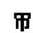
Sword going into a mouth = sword swallower.
swordswallower
636婦
FU - Your woman is a fucked up sword swallowing housewife with a big snout nose
housewife
フ
よめ
637掃
SOU - The big snouted sword swallower used his hand to sweep so much blood from his mouth in a sword swallowing accident
sweep
ソウ
はく
638帰
KI - The big snouted sword swallower uses a sword as his key when he goes back home
go back home
キ
( に / へ ) かえる
639帝
TEI - The sword swallower stands in front of the sovereign emperor and takes his own life
sovereign / emperor
テイ
640締
She tightened the string around the emperor!! Next stop, the guillotine! Viva la revolucion!
tighten
( を ) しめる
( が ) しまる
641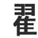
DESCRIPTION: A turkey with 2 snouts is a mutant
MUTANT
642控
KOU - Abstain from making empty threats with your hands or I'll stab your colon
abstain
コウ
ひかえる
648紅
KOU/KU - I tried to craft a kuchi and a colon from crimson string.. and failed!
crimson
コウ、ク
べに
くれない
649
pirate's hook
651写
SHA - Gerge Michael shall bestow a copy of his moustache to history
copy
シャ
( を ) うつす
( が ) うつる
654汚
O - There's one dirty O-ring on my hook, wash it off with water please
dirty
オ
( を ) よごす
( が ) よごれる
655極
KYOKU - The pirate jumped out from behind a tree and is clawing your mouth with his pirate hook and you are kicking him in the crotch and it is so extreme. Luckily it's all just one song (曲 = KYOKU = SONG)
extreme
キョク
( を ) きわめる
656誇
KO - The kodomo is proud of having the guts to say the fat man shouldn't wave his hook around
be proud of
コ
ほこる
ほこり
657考
KOU - I'm too dizzy to even consider removing a colon with my pirate hook
consider
コウ
かんがえる
かんがえ
659拭
SHOKU - Wiping your butt with your bare hand is an Arab ritual that might shock members of the infidel community
wipe
ショク
ふく
662武
BU - There is only one ritual that makes the military stop what they are doing and boogie: Hammer Time
military
ブ
664代
DAI - That person died in a ritual instead of the sheep, resulting in a whole generation being tainted
generation / instead of
ダイ
( が ) かわる
かわり ( に )
665貸
TAI - This is a generation of tight money lenders DESCRIPTION: Pronounced as 「かし」 when used as a suffix. Usually found on store signs, meaning rental (room for rent, parking space for rent, etc.).
lend
タイ
かす
666戈
So anyway, yeah, during the ritual they get all Aztec on your ass with a big spear. DESCRIPTION: We'll think of the line as a still-beating heart impaled on the end of the spear.
spear
667閥
BATSU - When your clique gets to the gate, my clique will strike them down with baseball bats!
clique
バツ
669惑
WAKU - One misguided heart causes the mouth to spear another's emotions and we can't just walk away from that
be misguided or tempted
ワク
まどう
670域
IKI - I relied on my one spear and my mouth to eek out an existence in this land region
region
イキ
673戦
SEN - I merely send the soldiers to fight with spears, I'm not responsible for them
fight
セン
( と ) たたかう
たたかい
674幾
KI - Eazy-E has 2 people that know how to keep track of how much he earns in spear manufacuring
how much?
キ
いくつ
いくら
676sentry
DESCRIPTION: I call him the SENTRY, because who else stands all day in the sun holding a spear?
sentry
678職
SHOKU - I was shocked to hear that the sentry was able to find employment as an ear specialist
employment
ショク
679織
SHOKU/SHIKI - I was shocked that she keeps a woven string she stole from the sentry organization
organization / weave
ショク、シキ
おる
680堅
KEN - Ken's vassal has a crotch as steadfast and solid as the earth itself
solid, steadfast
ケン
かたい
689賢
KEN - A clever shellfish attached itself to Ken's crotch and claimed him to be its vassal
clever
ケン
かしこい
691覧
RAN - One of the vassals picked up his rifle and ran to view (look at) the invading force
view
ラン
692臨
RIN - The vassal confronts anyone who approaches the boxed rings with his rifle
to confront
リン
( に ) のぞむ
693姫
The princess is a woman who keeps calling the vassal to her room at night Usually ひめ but the onyomi キ is often used in names
princess
( お ) ひめ ( さま )
694喚
KAN - Genghis Khan exclaims in pain as four big fish hooks get lodged in his mouth
exclaim
カン
( が ) わめく
698換
KAN - Genghis Khan exchanged the fingers of his enemies for four big fish hooks
exchange
カン
かえる
699欠
KETSU - Tell that person that I am lacking ketchup and to pass it or I'll beat them with my rifle
lack
ケツ
( に ) かける
700敏
BIN - Every director has to be quick-witted if they want to survive in Hollywood and not end up living in a bin
DESCRIPTION: This kanji applies to both physical agility, and mental quick-wittedness. And it means sensitive as well.agile / sensitive
ビン
708敗
HAI - The director became hyper in the presence of money, which was his biggest failure really
failure / be defeated
ハイ
( で / に ) やぶれる
709放
HOU - The director released a group of hoes who then ran in all directions
release
ホウ
( を ) はなす
( が ) はなれる
712激
GEKI - The white water flows at an intense speed in the direction of the geeky director
intense
ゲキ
はげしい
714繁
HAN - Han Solo is still agile enough to star in a reproduction of String (fictional movie)
reproduction
ハン
715攻
KOU - While constructing the movie set, the director's colon was attacked by a rabid disease
attack
コウ
せめる
716啇
DESCRIPTION: You can think of him as an old man with a huge moustache who stands up whenever a varmint encroaches on his mud-flap. Also, Yosemite Sam is Bugs Bunny's ENEMY, and this radical is STRONG FOR "TEKI".. which is the word for enemy!
Yosemite Sam
717敵
TEKI - Bugs Bunny was the enemy (テキ) of Yosemite Sam. (As was the director of the cartoon, which is why Sam always lost!)
enemy
テキ
( に ) かなう
718適
TEKI - Yosemite Sam is very suitable for the mud-flaps of a moving vehicle as he spits dirt at your enemies (other drivers)
suitable
テキ
719摘
TEKI - Yosemite Sam's fingers are used to pluck the hair of his enemy (Bugs Bunny)
pluck
テキ
つむ
721改
KAI - The director told me I had to renew and improve the kite all by myself
renew / improve
カイ
( を ) あらためる
( が ) あらたまる
723起
KI - Myself, I go running as soon as I wake up. It's the key to good health
wake up / occur
キ
( は ) おきる
( が ) おこる
724球
KYUU - The king demands that you show your cute spheres at the imperial court tomorrow
sphere
キュウ
たま
730厳
GEN - The strict director is throwing the baby bird ears he constructed off the cliff again.. that old coot
strict
ゲン
きびしい
732励
REI - 10,000 strong diligent workers built a laser death ray on the cliff
diligence
レイ
( を ) はげます
( に ) はげむ
733歴
REKI - Ray keeps a chronicle of the time he stopped under a cliff and found a grove of beautiful trees DESCRIPTION: This kind of means "permanent record", as in, "Young man, this will go on your...".
chronicle
レキ
734厚
KOU - The child got stuck at the bottom of the cliff all day and crows pecked out his colon through the thick skin
thick
コウ
あつい
735圧
ATSU - The earth under the cliff is under a lot of pressure to do what it aught to do, which is turn into diamond!
pressure
アツ
736備
BI - The person living beside the cliff utilizes flowers to furnish his home to attract bees
furnish
ビ
そなえる
738産
SAN - Santa stands on top of the cliff and produces toys, giving them life, and then they roll downhill into your chimney
childbirth, production of things
サン
うむ
740原
GEN - That little white cliff was the original plateau for generations DESCRIPTION: By itself it means "plateau", but used with another kanji it means "original."
original / plateau
ゲン
はら
741源
GEN - The water coming from that plateau leads to the origin of the hot spring, it has been there for generations
hot spring / origin
ゲン
みなもと
742返
HEN - The Hen I bought was anti-movement, didn't move at all, so I returned it
return
ヘン
( を ) かえす
( が ) かえる
744坂
HAN - Han solo, accustomed to the zero-gravity of space, is against climbing the steep slopes of the earth!
slope
ハン
さか
745
LOOKALIKE: Don't get the 'open scissors' confused with the nail radical (丁)which has a mutant version USED IN: 司 幻 気 決 快 成 寸
open scissors
749成
SEI - Even if you throw me off a cliff, I won't say which scissors will become spears
become
セイ
( に ) なる
750越
Becoming a runner is going beyond my capabilities DESCRIPTION: Unlike the other 「超す」 which means go over a number or limit, this 「越す」 means go beyond physically.
go beyond
( を ) こす
( が ) こえる
752蔵
ZOU - The elephant (象 = ゾウ) is kept in a traditional storehouse where it has become attached to the vassal and flowers there
traditional storehouse
ゾウ
くら
753歳
SAI - When you become one year old you stop being small and sigh a lot because you are already jaded with the world
years old
サイ
755滅
METSU - Water and fire became the one thing that destroyed the Mets' stadium in the end
destroy / annihilate
メツ
( を ) ほろぼす
( が ) ほろびる
756気
GE/KI - Get in a good mood and keep being in a good mood or I'll carve one X-Rifle tattoo into you with scissors
DESCRIPTION: 「げ」 reading is a suffix meaning any of these: seeming; giving the appearance of; giving one the feeling of. You can attach it to adjectives, e.g. 「自慢げ」.mood
キ、ゲ
760決
KETSU - He decided to take a big pair of scissors and cut open a bag of ketchup, and it rained out of the bag like water
decide
ケツ
( を ) きめる
( が ) きまる
761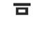
DESCRIPTION: A mouth with a tiny, narrow Moustache above it. What could be Hitler? That's right USED IN: 減 感 豆 同 司
Hitler
763減
GEN - Hitler decreases the water allotment for P.O.W's again, he has become a real dick
decrease
ゲン
( を ) へらす
( が ) へる
764感
KAN - Genghis Kahn, deep in his heart, feels that he has become as bad as Hitler
feeling
カン
かんじる
765憾
KAN - Genghis Khan's heart found his previous feelings regrettable and he went back to being a murdering beast of a man
regrettable
カン
766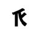
DESCRIPTION: Imagine a person on the left, holding out their arm and thumb (on the right), hitchhiking USED IN: 旅 派 脈
hitchhiker
772旅
RYO - Regulate your odor! There's a hitchhiker in that direction and he'll shoot you with his rifle if he smells you. Then we would have to cancel our trip!
trip
リョ
たび
773派
HA - Ha! The hitchhiker jumped off the cliff, into the water below and joined the mermaid faction. True story
faction
ハ
774脈
MYAKU - The Myaku Mad Boys (INSIDER REFERENCE SORRY) threw a hitchhiker off a cliff so they could harvest his organs and veins
vein
ミャク
775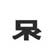
DESCRIPTION: The hitchhiker was talking with her mouth about how she wanted to travel really far.
far away
776遠
EN - Please enjoy the trip as you move to a far away place on earth. Don't stop to feed the hitchhiker's mouth
far
エン
とおい
777園
EN - There's a public park really far from here that is surrounded by fertile ground and is full of enjoyable things to do
public park
エン
778環
KAN - Genghis Khan, the king, wants to live in one far away environment where nets are made
environment
カン
779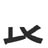
USED IN: 衣 裏 哀 良 展 長 嬢 襲
kick in the nuts
780表
HYOU - I only sometimes express my urge to kick the master in the nuts
express
ヒョウ
おもて
( を ) あらわす
782裁
SAI - The ten cloth wearers sighed after the trial concluded that they be speared to death
trial
サイ
さばく
785褒
HOU - A tophat doesn't guarantee praise, in fact a ho' may just kick you in the nuts
praise
ホウ
ほめる
786裏
If you wear a tophat in the back part of the village, you'll get kicked in the nuts. It's a real rough 'hood DESCRIPTION: This tends to use KUNYOMI in most of its jukugo
backside
リ
うら
787哀
AI - Aye, I do find it pitiful when somone sticks their mouth through their cloth at the dinner table
pitiful
アイ
あわれ ( な )
あわれむ
788良
RYOU - I re-order you to kick that white guy in the nuts! I don't care if he's a good guy!
good
リョウ
よい
790階
KAI - Everyone in the town flies kites from every story of their building
DESCRIPTION: Counter for stories and floors of a building.story of a building
カイ
801防
BOU - The town wards off bowlers from every direction. They're nothin' but trouble
ward off
ボウ
ふせぐ
804陥
KAN - Genghis Khan entrapped his former town using a giant fish-hook
entrapped
カン
( を ) おとしいれる
( が ) おちいる
805隠
IN - I hid the snout in a nest. I hid the nest in a heart. I hid the heart in a deserted part of town
hide
イン
( を ) かくす
( が ) かくれる
807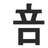
DESCRIPTION: When the mistress stands on his mouth, the masochist's screams get double loud!
double the amount
808部
BU - Our right hand section of town is double the size of your left hand section. Boo your section!! DESCRIPTION: Means club when used as a suffix, e.g. 「野球部」 means baseball club.
section
ブ
809剖
BOU - This bowling ball got a double strike so we dissected it with a sword to see what magic was inside
dissect
ボウ
810倍
BAI - I'll buy double what that person buys! DESCRIPTION: Suffix meaning twice, times or -fold, e.g. 「三倍」 means three times.
double
バイ
811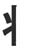
Kanjidamage lists this as a guy so macho he has 2 dicks but that's too long for my liking, so it's a flailing girl! You can see her flailing her arms around USED IN: 壮 寝 状 北
flailing girl
812状
JOU - Joe Stalin's wife being a flailing bitch is a circumstance he deals with every day
circumstance
ジョウ
815寝
SHIN - Martin Sheen and George Michael are like flailing girls in bed, crowns clanging, crotches and snouts 'a rubbing DESCRIPTION: Most of the time, 「ね」 is used as the reading in jukugo
go to bed
シン
ねる
ねかす
816北
HOKU - Hockey is a sport they play in the north, to me it just looks like flailing girls in high heels
north
ホク / ボク
きた
817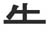
DESCRIPTION: It looks like some football guy hurling a ball
hurl
819告
KOKU - I would like to inform you that I am about to hurl a cock into your mouth
inform
コク
つげる
822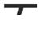
DESCRIPTION: This is basically the katakana TE (テ) , and what word starts with "TE"? TErrorist, that's what. USED IN: 百 石 頭 面
terrorist
827面
MEN - Terrorists are men with big boxes full of eyes, which they then face to the camera
front surface / face
メン
つら
おも
828百
HYAKU - A hundred Swedish terrorists in a room all day saying: hya cool, hya thets reellii cool~ JA, COOL! DotA ist reelii cool. Javla Bra. Hurgen dyurgen fyurgen byerg
hundred
ヒャク
829憂
YUU - You grieve for George Michael because each time he writes this kanji he forgets to add the extra line in 百. His heart just isn't in it
grieve
ユウ
うれい
830優
YUU - You are a kindhearted person.. you even excel at expressing grief. IS THERE ANYTHING YOU CAN'T DO??
kindhearted / excel
ユウ
やさしい
( に ) すぐれる
831縮
SHUKU - The string holding the Inn together contracted, which shook the building
contract / shrink
シュク
( が ) ちぢまる
( が ) ちぢむ
833礎
SO - Someone told me that the correct way to build a foundation is by using rocks and grove trees
foundation
ソ
いしずえ
837滞
TAI - Waterbelt-Man can't delay tieing up criminals for great justice
delay / be overdue
タイ
( が ) とどこおる
841崩
HOU - A mountain the size of 2 moons collapsed on top of the ho' .. Bitch dead yo
collapse
ホウ
( が ) くずれる
( を ) くずす
843密
MITSU - Me too! I want to know the secret of Crown Mountain!! Cross my heart I won't tell anyone!
secrecy
ミツ
ひそか ( な )
844岸
GAN - Gandhi lives on a mountain but dries his clothes at the bottom of the cliff, by the shore
shore
ガン
きし
846岳
GAKU - It got cool on the hilltop of Mt. Gaku
DESCRIPTION: This means the same as 「山」 but it is more used in Hokkaido, whereas 「山」 is more used in southern Japan.mount
ガク
( ｘｘｘ ) たけ
848頭
TOU - The terrorist threatens to cut you from head to toe unless you give him money and beans
DESCRIPTION - The right part of this kanji will become 'head' when found in other kanjihead
トウ
あたま
855頂
CHOU - At the climax of the movie, Maggy Chou got a nail through her head!
summit / climax
チョウ
いただき
いただく
860額
GAKU - The customer's forehead got cool from balancing a large amount of money on it DESCRIPTION: Literally it means forehead, but as a jukugo it is a suffix which means amount or sum of money.
amount of money / forehead
ガク
ひたい
861顧
KO - When I look back on it.. It was wrong to hire the kodomo simply because he had a big head
look back on
コ
かえりみる
864傾
KEI - It's not OK for a person to lean their heel on another's head
lean
ケイ
( を ) かたむける
( が ) かたむく
865項
KOU - What was that paragraph about some guys colon being constructed inside his head?? Weird, man.. just weird
item / paragraph
コウ
866順
JUN - A sequence of events took place in June, leading us to discover a head in the river
sequence
ジュン
868道
DOU - Don't move your neck while walking down this street, CCTV will know you're a non-human DESCRIPTION: Can be used as a suffix for methods or philosophies to mean "way to..." or "road to...", e.g. 「剣道」 means kendo (lit: way of the sword).
street
ドウ
みち
875説
SETSU - My horny older brother said to me that no words can explain why he did it
explain
セツ
とく
877脱
DATSU - My horny brother's idea of a romantic date is to get naked in the back of a Datsun on a full moon night
get naked
ダツ
( を ) ぬぐ
878磁
JI - Jesus loved his stone magnet
Double Eazy-E + Worms = Magnet (no particular reason - just magnet is easy to remember)magnet
ジ
880詳
SHOU - A sheep shows off in front of the expert by using complicated words
expert
ショウ
( に ) くわしい
885洋
YOU - The western sheep just yawns as she is thrown into the water of the Pacific: Yeah, I can swim, big deal dudes DESCRIPTION: Means "western style" when used as a prefix.
Pacific Ocean / the West
ヨウ
886差
SA - Sheep in San Andreas discriminate against lefties
DESCRIPTION: Means "difference" when used as a suffix, e.g. 「時差」 means time difference.discriminate
サ
( を / が ) さす
888着
CHAKU - The sheep arrived wearing chalk colored eye patches Chalk was also used for チョク so be careful.. DESCRIPTION: The jukugo having to do with clothes tend to be kunyomi, but the jukugo about arrival are onyomi
wear / arrive
チャク
( が ) つく
( を ) きる
889養
YOU - If you rear sheep good enough their legs never get tired and they don't yawn
cultivate, rear
ヨウ
やしなう
890義
GI - Gesus (Jesus' ugly twin brother) was righteous, and we sheep are his flock
righteousness
ギ
891様
YOU - The important person yawns as he sees a sheep jump out of the tree and into the water.. everyday occurence that is
important person
ヨウ
( ｘｘｘ ) さま
894添
TEN - Append me an extra little drop of water and I'll grant you ten heavenly wishes
append
テン
そえる
896
DESCRIPTION: Where you go and get 77 virgins after blowing up some infidels.
horny heaven
899咲
SHOU - Show me where the cherry trees are blooming in horny heaven, I want to catch the petals in my mouth
こうしょう 【巧笑 · 巧咲】 –noun courteous laughter; forced laughterbloom
ショウ
さく
901関
KAN - Genghis Khan guards the gate that connects the material world to horny heaven
connected to
カン
902圏
KEN - Ken's range of influence increases as he rolls up Ryu and puts him in a big box
range / area of influence
ケン
904券
KEN - Ken has a certificate of sword mastery from horny heaven
DESCRIPTION: You can attach the suffix 「券」 to any noun to mean ticket, coupon, certificate, etc.certificate, coupon
ケン
905弟
TEI/DAI - One arrow from a bow dropped vertically from the sky and takes my horny younger brother out.. he died
younger brother
テイ、ダイ
おとうと
908第
DAI - My younger brother ranks the bamboo diet highly in the series of diets available
rank or number in series
ダイ
909沸
FUTSU - My foot's sore when my younger brother boils it in water.. I paid him $5 to stop it!
boil
フツ
( が ) わく
910費
HI - He (my younger bro) spends all his dollars on shellfish and other trivial expenses
expenses
ヒ
ついやす
911弾
DAN - Dan merely shoots bullets with his bow while playing guitar and bouncing on his spacehopper
bullet / play guitar / bounce
ダン
ひく
( が ) はずむ
914湾
WAN - The wannabe Redbows (fake sports team) wanna live by the bay so they can swim in the water
Bay
ワン
916変
HEN - Each hen lays a strange red egg, which changes into a dragon!!!~!!@##
change, strange
ヘン
( を ) かえる
( が ) かわる
919
peaked roof
923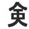
Every kanji that uses this radical has 「けん」 as its onyomi, so you could say: Ken leads a very risky life in the Street Fighting tournament DESCRIPTION: It's risky to stand right under the center of a peaked roof during an earthquake.
risk (radical)
924金
KIN - The horny king keeps his gold in the peaked roof, away from his kinfolk
gold
キン
( お ) かね
930鎖
SA - The baby birds from San-Andreas wear a chain of golden seashells
This isn't exactly the radical for baby birds but it'll dochain / connection
サ
くさり
935茶
CHA - Tea (チャ) flowers grow on top of the peaked roof and father christmas steals them hohoho
tea
チャ
939飾
SHOKU - I was shocked when the rifle shot out a dagger and decorated the walls with what the guy had just eaten
decorate
ショク
かざる
かざり
945幹
KAN - Genghis Khan gets up in the morning to dry the peaked roof and chop trunks
DESCRIPTION: As a prefix, it means the main (office, manager, road) rather than a branch one.trunk
カン
みき
948余
YO - I have an excess amount of yo-yo's on show in my peaked roof attic
excess
ヨ
( に / が ) あまる
951倉
SOU - The peaked roof storage facility has so many double doors. My mouth hit the floor when I saw them all
storage
ソウ
955創
SOU - I store my swords in so many creative places, no one will ever find them
originate / creative
ソウ
956介
KAI - I will introduce you to the 2 stick figures that make all the kites under the peaked roof
introduce / intervene
カイ
957界
KAI - Kite flying in the rice field introduces the world to the fun times to be had while farming DESCRIPTION: Can be used as a suffix to mean the world of some category, e.g. 「政界」 means political world.
the world
カイ
958合
GOU - Hitler is suited to living under a golden peaked roof
to suit
ゴウ
( に ) あう
( に / と ) あわせる
959塔
TOU - Flowers are suited to towering from the earth towards the sky DESCRIPTION: Can be used as a suffix to mean some certain tower, e.g. 「エッフェル塔」 means Eiffel Tower.
tower
トウ
961拾
SHUU - Use your fingers to pick some shoes off the ground to see if they suit you
pick up off the ground
シュウ
ひろう
962搭
TOU - Picking flowers with your fingers is not suited towards the lifestyle of living on-board a cruise ship
board
トウ
963念
NEN - You're the sole concern of my heart right now; I've been stalking you all year
concern
ネン
968領
RYOU - The head chief commanded me to re-order his territory in to alphabetical order
territory
リョウ
971次
JI - The next coming of Jesus will lack chilly weather - he brings the heat yo
next
ジ
つぎ ( の )
979姿
SHI - Dudes always cheat because they look at the next woman's body shape and say "She's got it going on!"
someone's shape, body, form
シ
すがた
980
DESCRIPTION: This looks like "big" with some extra lines, but it's easier to make up stories involving 3 Stooges, so there we are.
three Stooges
982実
JITSU - In reality, the 3 stooges were never crowned as the best ju-jitsu fighters
truth, reality
ジツ
987扁
HEN - A book fell from the door and flattened the hen
DESCRIPTION: Obsolete kanji! Nowadays it's just a radicalflat
ヘン
990
Book counter + Store front looking thing = Bookstore
bookstore
994論
RON - Ron Paul makes a case for saying there aren't enough bookstores in America
make a case for
ロン
995倫
RIN - That person's ethics require him to return the ring he found at the bookstore
ethics, principles
リン
996寸
SUN - A drop of glue and soon my scissors will be working again DESCRIPTION: This kanji is obsolete, but when you see this 99% of the time, it's a RADICAL. (Why glue? Because the main kanji you'll see it in is 'stick to' - as you'll soon see!)
glue radical / measurement
スン
997附
FU - It's fucked up to have an attachment with or be stuck to your town just because you were born there
attachment
フ
999討
TOU - You say you want to attack my toes with glue? Let's discuss this
attack / discuss
トウ
うつ
1000奪
DATSU - A big turkey high from sniffing glue tries to steal your Datsun by force
steal by force
ダツ
うばう
1001守
SHU - Protect your privilege of seeing her underwear by gluing her crown back together
protect
シュ
まもる
1002寿
JU/SU - Juicy underwear has the same 3 day lifespan of sushi and glue. Super short
lifespan / sushi
ジュ、ス
1006慰
I - I will show you a corpse with a heart made of glue. Then we will console the family of said corpse
console
イ
なぐさめる
1007尋
JIN - I'm asking you to craft me some jeans with a mouth and snout pattern. Don't use any glue though!
ask
ジン
たずねる
1008導
DOU - This street leads to a glue and dough factory the lead in the sentence is misleading as it means lead as in leadership!
lead
ドウ
みちびく
1009 the lead in the sentence is misleading as it means lead as in leadership等
TOU - The bamboo temple has no equal, no plural, no toes, etc, etc
equal / etc. / plural
トウ
ひとしい
など
1016父
FU - Your dad has a fucked up X scar on his legs
Think of dad on two crutches, the crutches crossing back and forth as he hobbles.dad
フ
ちち
1019交
KOU - Your dad combines his tophat with his colon (NO SENSE WHATSOEVER)
combine
コウ
( を ) まぜる
( が ) まじる
1020効
KOU - The colon combines its strength with other organs to effectively digest food
effective
コウ
( が ) きく
1024絞
KOU - Let's combine our strings and wring out our colons with it
wring out / strangle
コウ
( を ) しめる
( が ) しまる
1025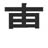
USED IN: 専 恵 敷 画 演
TNT plunger
1026専
SEN - My specialty is sending TNT and glue exclusively to the front lines
specialty / exclusive
セン
もっぱら
1027博
HAKU - The Ph.D specialist wrote an exposition on how to drop 10 hackers into acid and get away with it
Ph.D. / exposition
ハク
1028縛
BAKU - Back in my day our specialty was to tie up things with string and drop them in acid
tie up
バク
しばる
1029薄
HAKU - My speciality is to hack water lillies into drops of weak or thin capsules for medicine
weak or thin
ハク
うすい
うすめる
1030演
EN - I enjoyed the performance where the guy with the crown used TNT to explode the animal legs into drops of water
performance
エン
1031恵
KEI - It's OK, I give you my blessing to explode my engine loving heart with TNT
blessing
ケイ、エ
めぐむ
( に ) めぐまれる
1032敷
The director is at the construction site, saying, "lay out the TNT in that direction!" - "Drop a bomb on it!"
lay out / site
しく
しき
1033離
RI - George Michael found a tophat in a real pit marked with an X which contained the secret of how to turn a cow into a turkey. He decided to divorce his husband and distance himself from the world upon finding out this huge secret
divorce / physical distance between things
リ
( を ) はなす
( から ) はなれる
1038出
SHUTSU - He pulled out the mountain upon mountain of evidence, handed it over to the judge then shoots the criminal in the face
pull out / hand over
シュツ
( を ) だす
( が ) でる
1039屈
KUTSU - I'll hand over the corpse with all the cuts in it; hope that will yield some results
yield
クツ
1040揺
YOU - He yawns as he uses his fingers to pack the birds nest into a tin can and sways it back and forth
sway, joggle
ヨウ
( を ) ゆさぶる
( が ) ゆれる
1043喋
A world with leaves and no flowers isn't even worth talking about so just shut your mouth
talk
( を / と ) しゃべる
1046胸
KYOU - Kyouko wrapped (covered later) her terribly big chesty breast organs in cloth to hide them
chest / breast
キョウ
むね
1052悩
NOU - The little birds are worried their terrible nautical brains and heart might fail them
worry
ノウ
なやみ
なやむ
1053疑
GI - Gesus doubts that pulling the arrow out of his mama's heel will correct her fully 矢 (arrow) + 匕 (heel) + 正 (correct) + マ (Mama)
doubt
ギ
うたがう
1055医
I - I am a doctor so I can remove the arrow from your cranium container
DESCRIPTION: Suffix meaning branch of medicine, medical expertise in something or doctor. For example, 「近医」 means local doctor, 「神経科医」 means neurologist.doctor
イ
1058族
ZOKU - My family are pirates so we of course have arrows and rifles in all directions
family
ゾク
1059候
KOU - The climate change candidate person was shot, by one vertical arrow, in the colon, by yuuu~! ユ
climate, candidate
コウ
1060失
SHITSU - I missed out on the deal of getting extra big arrows in my sheets
miss out on
シツ
うしなう
1062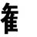
確
KAKU - Michio Kaku looks closely at the stone swan, making certain it's not real
make certain
カク
たしか
たしかめる
1068垂
SUI - My sweet car is dangling in mid-air! Looks like car (車) but the horizontal lines poke out, and the verticals do NOT poke out
drip, dangle
スイ
( を ) たらす
( が ) たれる
1071乗
JOU - The car Joe Stalin was riding in is now dangling from a tree
ride a vehicle
ジョウ
( に ) のる
( を ) のせる
1072輪
RIN - The bookstore is just a front for selling blackmaket rings and car wheels
ring / wheel
リン
わ
1074軒
KEN - Ken dries out his car then goes round counting the buildings in his area
counter for buildings
ケン
1075載
SAI - I sighed as I saw 10 cars impaled on spears as an ad appearing in a print magazine, have they no class?
appear in print
サイ
( を / に ) のせる
( に ) のる
1078連
REN - I'm taking Rena Tanaka with me and moving away from here in my car
take with / inform of
レン
( を ) つれる
( が ) つらなる
1081運
UN - The army can move to carry your luck? That's un-possible! (Me fail English?)
carry / luck
ウン
はこぶ
1082華
KA - His flamboyant car had flowers dangling from the rearview mirror
flamboyant / flower
カ
はな
1084剰
JOU - It's hard for Joe Stalin to ride the train with his excessive swords, he can't even fit in the door!
excessive
ジョウ
1087種
SHU - When you smell her underwear do you get a heavy stench of wheat? What type of problem would that be? Maybe she ate some wheat seeds
seed / type or kind
シュ
たね
1088働
DOU - A baker person moves dough around as they do their job
DESCRIPTION: 「仕」 「勤」 and 「働」 all mean work, but: 「仕」 emphasizes the job title 「働」 emphasizes the physical labor on the job 「勤」 emphasizes to work at such-and-such a companydo your job
ドウ
はたらく
1090非
HI - He won't put up with injustice or mistakes
DESCRIPTION: Prefix meaning fault, non- or being disadvantageous at something. Usually words use 「不」 or 「無」, but occasionally you'll see a word like 「非常識」 meaning "lack of common sense."injustice / mistake
ヒ
1092輩
HAI - It is an injustice that my older classmates can get high and drive a car, but us younger ones can't!
older or younger colleague
ハイ
1093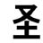
軽
KEI - It's not OK to take a dump in a car, even if it's just a lightweight one
lightweight
ケイ
( が ) かるい
1099経
KEI - It's not OK to experience string like dumps, they should be solid mass
experience
ケイ
( が ) たつ
1100怪
KAI - I'm suspicious of her taking a dump on my heart then casually flying a kite
suspicious
カイ
あやしい
1101.jpg)
DESCRIPTION: It's the katakana NA (ナ). So, Naruto USED IN: 雄 布 友 右 左 有 在 存
Naruto
1102雄
YUU - You think Naruto is a hero because he saved a male turkey and moo-cow?
male animal or hero
ユウ
おす
1105怖
FU - It is fucked up and scary when you see a heart lying on some fabric, randomly
scary
フ
こわい
( を ) こわがる
1108片
HEN - The hen proposed with a fragment of chickenfeed DESCRIPTION: Looks like someone proposing
fragment
ヘン
かた
1117版
HAN - Han Solo tried to publish a book that was against proposing but it never got past the printing block
printing block / publication
ハン
1118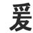
DESCRIPTION: The crows in the nest are friends with each other
crows
1119緩
KAN - Genghis Khan tied a string around the crow but it became loose
become loose / abate
カン
( を / が ) ゆるむ
( を ) ゆるめる
1122顔
GAN - Gandhi lost all the hair on his head and face by standing on such a high cliff
DESCRIPTION: Usually only ガン in specialist words, e.g. がんめんこつ 【顔面骨】 = Facial boneface
ガン
かお
1127修
SHUU - The director is looking for one person with long hair who has mastered the skill of acting without shoes
master a skill
シュウ
1129惨
SAN/ZAN - Santa and Tarzan didn't have the heart to visit the wretched old woman
wretched
サン、ザン
みじめ ( な )
1130膨
BOU - I rejoice in bowling but it causes my organs to bulge and my hair to fall out
bulge
ボウ
( が ) ふくらむ
1131
DESCRIPTION: A salon is a room with a peaked roof where you go to get your weave on and your hair done USED IN: 珍 診
salon
1132珍
CHIN - It's very rare for the king to go to a hair salon, so now his hair hangs down past his chin
very rare
チン
めずらしい
1133广
DESCRIPTION: The dot is actually an elevator taking you down to the cave inside USED IN: 廊 磨 腐 応 府 庁 庫 店 座 床 麻 唐 広 庭 廃 序 康 底
cave radical
1135庁
CHOU - Maggy Chou got her nails done in a metropolitan government cave
metropolitan government
チョウ
1141座
ZA - 2 people sit behind some earth in a cave to escape the Zebra attack 坐 = Sit radical (will use again way later)
sit
ザ
( に ) すわる
1144庶 席 度
DESCRIPTION: A mole is like a bunny that never leaves the darkness of a cave USED IN: 庶 席 度
mole
1150庶
SHO - That mole living on the shore is just a commoner, set him on fire if you like
commoner
ショ
1151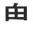
RAD - The villian drops into the rice field from above
villain
1155塊
KAI - Demons, kites and even the earth itself are all clumped together in Katamari Damacy
clump
カイ
かたまり
1160氏
RAD / SHI - She watched Braveheart with her family
DESCRIPTION: Looks like William Wallace having his head chopped off by an executioner as he is tied to a cross = Braveheart, obviously.Mr. / Braveheart radical
シ
1162底
TEI - There's one copy of the Braveheart DVD at the bottom of the cave. I'm taking it!
bottom
テイ
( の ) そこ
1163紙
SHI - She wrote a paper about the usage of string in the Braveheart movie (Fashion student)
paper
シ
かみ
1164低
TEI - That person takes one look at Braveheart and just think it's low. Too much blood!
low
テイ
ひくい
1165婚
KON - The woman in Braveheart gets married under a pinecone tree when the sun has gone down
marriage
コン
1166民
MIN - It's mean to make fun of the citizens in Braveheart just because they have big mouths
citizen
ミン
1168曲
KYOKU - Keep your cool when blasting a song while going around a bend
DESCRIPTION: 「曲」 is read as 「きょく」 when used by itself, meaning song or piece of music.song / turn or bend
キョク
( を ) まげる
( が ) まがる
1170豊
HOU - The ho' eats a plentiful amount of beans before singing her song
plentiful
ホウ
ゆたか ( な )
1171遭
SOU - The cadet (later) moved so far away after having a bad encounter
DESCRIPTION: Just like the other 「合う」, but only used with sudden and random disasters, such as a car accident, a mugging, etc.bad encounter
ソウ
( に ) あう
1173農
NOU - Farming is not a nautical activity, so I want payback on the nautical farming song you wrote for me
farming
ノウ
1175振
SHIN - Martin Sheen waves the pretend pistol in his hand hand, promising payback
wave / pretend
シン
( を ) ふる
( に ) ふられる
1179癶
DESCRIPTION: The lines are their eyes, the peaked roof part is their dopey smiles USED IN: 登 祭 発
dopey twins
1181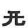
DESCRIPTION: This should be easy to remember if you look at the kanji for 'closed' and 'open': 閉 開 USED IN: 開 発 形 研 刑
open radical
1187型
KEI - It's not OK or the proper way to penalize the earth for our selfishness
type / proper way
ケイ
かた
1194牲
SEI - When you turn a cow into a sacrifcial victim don't forget to say a prayer for its life
sacrificial victim
セイ
1200解
KAI - The kite pinned a cow into the corner and we had to use a sword to untie it. That's problem solving!
solve / untie
カイ
( を ) とく
( を / が ) とける
1202物
BUTSU/MOTSU - I refuse to knock boots with most things. Even cows
DESCRIPTION: This is one of the most useful kanji. But it's also one of the most disgraceful kanji when it comes to using KUNyomi in random jukugo. Like 50% of the time it'll use MONO instead of the onyomi. And even when it DOES use the onyomi, there's two onyomi which are ALSO used randomly. On the good side, most of the 「物」 jukugo are so common that you'll pick them up in no time.thing
ブツ、モツ
1204惚
Two hearts fall in love with the same thing. A typical love triangle 恍惚 「こうこつ」 = ecstasy; trance
to fall in love with
コツ
( に ) ほれる
1205揚
YOU - He yawns as it's so easy to hoist the thing with just one hand
hoist / deep fat fry
ヨウ
( を ) あげる
( が ) あがる
1208場
JOU - It's easy for Joe Stalin to take over all places on the earth
DESCRIPTION: This kanji uses the KUN and ON pronunciations in jukugo pretty much randomly.place
ジョウ
( ｘｘｘ ) ば
1211
DESCRIPTION: Fish hook dangling a piece of bait USED IN: 免 勉 色 象
bait
1212色
SHIKI/SHOKU - She keeps wearing the most shocking colors. She's like bait for perverts, might as well be wagging a tail
color
シキ、ショク
いろ
1213免
MEN - Men have a license to use their legs as bait without exemption
exemption / license
メン
まぬかれる
1214逸
ITSU - It's the flash who has a license to move faster than normal
more or less than normal
イツ
それる
1215絶
ZETSU - Colourful string has gone extinct, which is too bad because it had a real zest for life
extinct
ゼツ
( を ) たつ
( が ) たえる
1217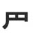
His eye mask!
Lone ranger
1219肥
HI - The lone ranger is now so obese his organs have turned to heeps of manure
obese / manure
ヒ
1221象
ZOU/SHOU - A pig was used as bait in the phenomenal elephant circus show
DESCRIPTION: 「ぞう」 pronounciation means elephant while 「しょう」 means phenomenon.elephant / phenomenon
ゾウ、ショウ
1223像
ZOU - The elephant man wants a statue of himself to leave others with the image of him being a real person
statue / image
ゾウ
1224縁
EN - I enjoy wrapping string around the rim of the pig's snout. It's a good omen
rim / omen
エン
ふち
1225後
GO/KOU - Each time Eazy-E goes to play the traditional Japanese game of Go, he gets a cramp in his colon afterwards
DESCRIPTION: In a pinch, you can guess the pronunciation by checking the particles, 「あと」 goes with 「で」 but 「のち」 goes with 「に」. Usually.afterwards / behind
ゴ、コウ
( の ) あと ( で )
( の ) のち ( に )
1237得
TOKU - My husband goes to obtain some glue for us to toke on DESCRIPTION: Means any of these; profit, advantage, benefit, gain when used by itself!
bargain / obtain
トク
える
1240術
JUTSU - Naruto is going to do his 'Sexy no jutsu', which is his sexy ho' dripping with sweat transformation technique
art / technique
ジュツ
1243微
BI - The director wants you to go to the mountain and find a teeny bee. Oh, and bring me a pie on your way back
teeny
ビ
かすか ( な )
1245徴
CHOU - Maggy Chou goes to the mountain to look for a sign on how to be the king of directors
sign / indication
チョウ
1246
It's a cow.. but there's just one of them.. it's a lonely cow
USED IN: 徹 撤 育 陰 充 至 去 貿 留 棄 流 云Lonely cow
1247徹
TETSU - The director wanted to do a thoroughly crazy movie, go all out. It's about a lonely cow wearing an iron tophat on the moon
do thoroughly
テツ
1248撤
TETSU - The thoroughly crazy movie about the iron tophat wearing lonely cow on the moon had people clapping their hands before withdrawing from the theater. The director was pleased
withdraw
テツ
1249育
IKU - The tophat wearing lonely cow was raised by the moon. The lonely cow looked at the moon every night and thought to himself 'iku! iku!' But he never got to the moon.. poor cow, so lonely
grow up / be raised
イク
( を ) そだてる
( が ) そだつ
1250流
RYUU - The tophat wearing lonely cow re-used the water flowing in the river
flow
リュウ
( を ) ながす
( が ) ながれる
1251致
CHI - Until the director gets here I'll ask you politely to do what you are told and not eat all the cheese
polite "do"
チ
いたす
1258倒
TOU - When the person arrives, knock him down by tripping his toes
knock down
トウ
( を ) たおす
( が ) たおれる
1259去
KYO/KO - Keep your own 10 lonely cow kodomos in the past! They are gone, get over it
past
キョ、コ
( を ) さる
1260貿
BOU - The little lonely cow sold katanas and bowling balls for money on the international trading market
international trading
ボウ
1266留
RYUU - The little lonely cow is absent from the rice field. Maybe he stopped coming because we now have to re-use katanas
absent / stopped
リュウ
( を ) とまる
( が ) とどまる
1267転
TEN - The 2 lonely cows roll over ten cars. "That'll teach them for cow-tipping us!"
roll over
テン
( が ) ころがる
( が ) ころぶ
1269伝
DEN - The person transmits a message to the 2 lonely cows in the den
transmit
デン
( を ) つたえる
( が ) つたわる
1270会
KAI - The 2 lonely cows fly their kites under the peaked roof instead of going to the big meeting
big meeting
カイ
( に ) あう
1273街
GAI - Let's go shopping with the guys in the shopping district inside the termite mound
shopping district
ガイ
1276掛
GAI - The guy's toes and fingers hang from the termite mound
hang / halfway done
ガイ
( を ) かける
( が ) かかる
1277
RAD
termite pie
1280熱
NETSU - The nets have some hot round termite pie that have been cooked over a fire. But I have a fever so I can't eat them
hot thing / fever
ネツ
あつい
1283抗
KOU - The man wearing the diaper and tophat is opposed to using fingers in colon surgery
oppose
コウ
1287風
FUU/FU - It takes more than one fucked up bug in a diaper to fool me into thinking the wind is blowing
wind / the flu / style
フウ、フ
かぜ
1289恐
KYOU - Kyouko dreads having to construct the heart prop because she's mediocre at it
dread
キョウ
( を ) おそれる
( が ) おそろしい
1295殳
DESCRIPTION: Imagine a lazy babysitter throwing a diaper at the baby's crotch. Stupid baby, do it yourself!
throw radical
1296役
YAKU - Stop yacking and go throw yourself into the role! DESCRIPTION: Suffix which means role, post or position. E.g. 「上役」 means one's superior or senior, 「案内役」 means guide or host and so forth.
role
ヤク
1298設
SETSU - He said to me that throwing vulgar words around isn't going to establish any respect
establish
セツ
もうける
1299
DESCRIPTION: Ten + eyes = the compound insect eyes of the fly! USED IN: 循
the fly
1305真
SHIN - The truth is, Martin Sheen likes eating fly pie
DESCRIPTION: Prefix meaning entirely or purely something, e.g. 「真っ白い」 means pure white and 「真っ暗」 means total darkness. Words using this prefix always use kunyomitruth
シン
ま (っｘｘｘ )
1308懸
KEN - Ken is suspended from gambling in the Tribal Heart prefecture
suspend / gamble
ケン
( を ) かける
( が ) かかる
1311直
CHOKU/JIKI - Gee, keep eating chalk to correct your problems and you'll be nothing more than a loser fly
correct a probem / direct contact
チョク、ジキ
( を ) なおす
( が ) なおる
1312置
CHI - Putting a net over the cheese you put down on the table won't fix your problems
put down on table
チ
おく
1313植
SHOKU - It may shock you to know that trees and plants can fix a problem if you smoke them
plant
ショク
うえる
1315殖
SHOKU - The thief shocks you with his taser before his problems to fix start to multiply (someone calls police)
multiply
ショク
1317別
BETSU - The little terrorist bets you that he can separate his mouth with a sword
separate
ベツ
( と ) わかれる
1318序
JO - The first part of cave exploration is hiring Angelina Jolie, the Tomb Raider, beforehand
first part / preface / order
ジョ
1334矛
MU - Your mama slashes a moo-cow with her halberd before eating it DESCRIPTION: Beforehand + a slash - which is the halberd in question. The guy had the halberd ready beforehand, to stab your ass
halberd
ム
1337柔
JUU - The Jew makes a flexible wooden halberd
DESCRIPTION: This "soft" has more of a good meaning than the OTHER "soft" 「軟」. Flexible rather than weakflexible
ジュウ
やわらかい
1338務
MU - The strong cow just moos when the director tells it to perform a task, so he killed it with a halberd
perform a task
ム
( に / を ) つとめる
1339頼
RAI - Can I ask you the favor of carrying this bundle of sticks on your head? Yeah right!
ask a favor
ライ
たのむ
( に / を ) たよる
1342整
SEI - They say the director is the only one who can arrange the bundle of sticks correctly
arrange
セイ
( を ) ととのえる
( が ) ととのう
1344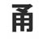
DESCRIPTION: I call it the pass radical because it's the main radical in 'pass', one of the most common kanji USED IN: 通 踊 痛
pass radical
1345通
TSUU - Two things move and pass each other DESCRIPTION: Is a noun and means avenue or street when read as 「とおり」. Both 「とおり」 and 「どおり」 readings are used in many expressions such as 「言う通り」 or 「約束通り」
pass
ツウ
( を ) とおす
( が ) とおる
1346柄
HEI - Hey, every 3rd tree has a pattern on it! Usually kunyomi even in jukugo (がら)
pattern
ヘイ
がら
1349疒
RAD DESCRIPTION: Think of it as a sick cliff, and those 3 little dots are spots, buboes, skin tags, warts, eczema flakes, etc. covering the sick cliff USED IN: 病 痛 疲 痢 痴 症 痺 癒 癖 療 痩
sick
1350
愉
YU - Your underwear gives pleasure to the butcher's heart
DESCRIPTION: This tanoshii means the same as the other tanoshii 「楽しい」, except that 「愉しい」 is very literary and pretentious.pleasure
ユ
たのしい
1360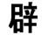
DESCRIPTION: A corpse with garlic spice in its mouth is exceptionally stinky! USED IN: 癖 避 壁
stinky
1363
DESCRIPTION: This is usually used in kanji about jobs or structured social get-togethers. That's why I called it small talk for RYOU SYMBOLIC USED IN: 療 寮 僚
small talk
1367療
RYOU - The nurse made small talk about re-ordering medical therapy supplies for those who are sick
medical therapy
リョウ
1368僚
RYOU - That coworker person doesn't small talk, he just re-orders office supplies
coworker
リョウ
1370申
SHIN - Martin Sheen humbly says that he is not god
DESCRIPTION: The kunyomi is only used on formal occasions, but you should learn it anyway because it is like one of the most common formal words!humbly say / god radical
シン
( と ) もうす
1371伸
SHIN - Martin Sheen is a person who extends into godhood
extend, stretch
シン
( を ) のばす
( が ) のびる
1375
雷
RAI - A lighting bolt landed right next me when I was in the rain soaked ricefield
lightning
ライ
かみなり
1392震
SHIN - Martin Sheen shakes and trembles in the rain, promising payback
shake, tremble
シン
( が ) ふるえる
1393
USED IN: 霊 湿 業 並 虚
sonic (the hedgehog)
1398湿
SHITSU - Sonic's sheets have become damp with water so he leaves them in the sun
become damp, moisten
シツ
しめる
1400僕
BOKU - Me, Sonic and the 3 horny stooges are all people who use boku for 'me' as we are polite! Not some ore (俺) beast of a man!
me (for dudes)
ボク
1402撲
BOKU - Sonic and the 3 horny stooges use their hands to eradicate me politely (boku)
eradicate
ボク
1403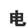
DESCRIPTION: There's a dragon trying to hide in the rice field, but you can tell because its tail is sticking out.
dragon radical
1404竜
RYUU - Re-use the standing dragon prop! (Movie set) DESCRIPTION: 「たつ」 is never used to mean a dragon itself. Instead, 「りゅう」 is used
dragon
リュウ
たつ
1405俺
A big dragon person - this is how Japanese dudes like to think of themselves
me (macho version)
おれ
1408需
JU - You demand I comb your rain soaked hair? Then I demand you wear juicy underwear
demand
ジュ
1412端
TAN - You can get a tan by standing on the edge of the mountain while I comb your hair
edge, border
タン
はし
1414驚
KYOU - Kyouko is atsonished by the respect the horse gave her
astonish
キョウ
( を ) おどろかす
( が ) おどろく
1425局
KYOKU - The department is haunted by the corpse of a poet but you have to keep your cool
department
キョク
1426拘
KOU - This poem verse is about a hand ripping out a colon and putting it in custody
put in custody
コウ
1427渇
KATSU - The cats got thirsty in the sun and went sniffing for the scent of water
thirsty
カツ
( が ) かわく
1431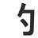
USED IN: 約 的 釣 均
promise
1432約
YAKU - I promise to stop yacking on about the approximate length of the string
promise / approximately
ヤク
1433的
TEKI - A white-man's promise isn't motivation for me as they are my enemy
DESCRIPTION: 「的」 is mostly used as a suffix which turns nouns into na-adjectives, e.g. 「政治」 meaning politics becomes 「政治的」 which means political.motivation / -al
テキ
まと
1434温
ON - The sun shining on the plate full of water, made the water warm
hot or warm thing
オン
( を ) あたためる
( が ) あたたまる
1439盛
SEI/JOU - They say Joe Stalin became unable to eat heaps of food from his plate
heaps of!
セイ、ジョウ
( を ) もる
さかん ( な )
1441塩
EN - I enjoy getting salt from the earth with my rifle and sprinklng it on my plate before putting it into my mouth
DESCRIPTION: Usually しおsalt
エン
しお
1442監
KAN - Genghis Khan used his one rifle to oversee the vassal's filling of the plate
oversee
カン
1443衆
SHUU - The hitchhiker puts on his shoes and goes to take 2 slices of blood out of the populace
populace
シュウ
1446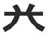
crab
1447挙
KYO - Keep your own crab in your hands until we mention that you should drop it
raise / cite / mention
キョ
( を ) あげる
( が ) あがる
1451盤
BAN - I'm generally banned from using plates or trays, on the basis that I'm dangerous with them
tray / basis
バン
1456猫
The cat is out playing with flowers in the rice field
DESCRIPTION: 犭 Symbolic for small animals in generalcat
ねこ
1457猛
MOU - Mickey Mouse cut up a child and put it on the plate for the fierce cat to eat DESCRIPTION: Prefix meaning ferocious or fierce something, e.g. 「猛攻撃」 means fierce attack
fierce
モウ
1458獲
KAKU - Michio Kaku studies cats who prey on the flowery crotch of turkeys
prey on / get
カク
える
1465卩
This radical is SYMBOLIC for stamp or seal or hand SYMBOLIC USED IN: 犯 印 叩 卵 却 範 御 腕 即 厄
fingerprint
1467犯
HAN - Han Solo committed the crime of smuggling cats but his fingerprints got him caught
commit a crime
ハン
おかす
1468御
GO - The honorific 'o' says he's going to stop hurling fingerprints around
the honorific "o"
ゴ
お
1474腕
WAN - You wanna crown you can wear in the evening that doesn't smudge with fingerprints? Well I wanna put my arm on the moon but we don't always get what we want
arm / skill
ワン
うで
1475厄
YAKU - Stop yacking about your misfortune of having your fingerprints found on the cliff
misfortune
ヤク
1478危
KI - I keep having the misfortune of having my fishhook in danger
dangerous
キ
( が ) あぶない
あやうい
1479
CP
captain planet
1480仰
GYOU - Captain Planet tells the person, "Get your own pompous costume!"
pompous / look up to
ギョウ
1483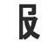
USED IN: 服 報
wardrobe
1484報
HOU - Fashion magazines have data on what ho's should put in their wardrobe to be happy
data
ホウ
ほうじる
むくい
1486且
Lincoln Force! (If any gets that then free cookie for you) USED IN: 阻 狙 組 粗 査 畳 助 祖
Abe Lincoln's Hat
1487組
SO - One's team would be better off with someone like Abe Lincoln than some random stringfellow
one's team
ソ
くみ
1489粗
SO - Someone told me that Abe Lincoln doesn't like bad quality rice because it has a rough texture
rough texture / bad quality
ソ
あらい
1491畳
JOU - Joe Stalin, Abe Lincoln and George Michael work together to cover the ricefield with tatami mats
tatami mat
ジョウ
たたみ
1493助
JO - Abe Lincoln saved his strength so he could jack off into his hat
save
ジョ
( を ) たすける
( が ) たすかる
1494副
FUKU - The guardian vice-captain carries a sword at the side of his clothes
side- or vice-
フク
1505幅
FUKU - The guardian carries a dagger the same width as his clothes (to conceal it)
width
フク
はば
1506
USED IN: 礼 乱 札 乳
hook
1508乱
RAN - I ran a hook through my tongue which caused a medical disorder
disorder
ラン
( を ) みだす
( が ) みだれる
1510札
SATSU - Bill my credit card for damaging the satsuma tree with my hook
DESCRIPTION: Usually means small card or label, but as a suffix it means paper money, as in "ten dollar bill".card / label / bill
サツ
ふだ
1511初
SHO - The ducky went to the shore to hold a katana for the first time
first time
ショ
( を ) はじめ ( に )
はじめて
1514裸
RA - Rah (egyptian sun god) gets naked in the bath with his rubber ducky and fruity bubble bath
naked
ラ
はだか
1515復
FUKU - Icarus is going to return his clothes to the store and re-do his fashion style
return or re-do
フク
1520履
RI - Put the pants and shoes on the corpse and return it to the grave
put on pants or shoes
リ
はく
1521溶
YOU - Ice melts giving the appearance of water? Yawn. Tell me something I don't know
melt
ヨウ
( を ) とかす
( が ) とける
1527葬
SOU - So many deaths in the hell of flowers (fictional name of a battle) we need to have funerals for
funeral
ソウ
ほうむる
1531戒
KAI - I was admonished for flying my kite in hell.. the devil even speared me
admonish / commandment
カイ
いましめる
1535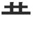
H in Hollywood sign
hollywood
1543譲
JOU - Joe Stalin says he will defer to kicking a Hollywood star in the nuts 6 times unless we put an extra line through the Hollywood sign
defer
ジョウ
( を / に ) ゆずる
1547惜
SEKI - A long time ago, a section of my heart got close to feeling love, but in the end, it was just close but no cigar
close but no cigar
セキ
おしい
おしむ
1549籍
SEKI - A long time ago, a section of my family register was made from 3 bamboo trees
family register
セキ
1550並
HEI - Hey, there are some ordinary worms lining up on Sonic's back
line up / ordinary
ヘイ
( を ) ならべる
( が ) ならぶ
1554供
KYOU - Kyouko is a person who will always be with you, will always accompany you
accompany
キョウ
1556翼
YOKU - Each political wing differentiates by wearing feathers and when they have a dispute they throw egg yolks at each other
wing (political)
ヨク
つばさ
1562再
SAI / SA - The king of San-Andreas sighs as he is once more forced to utilize his authority
again / once more
サイ、サ
ふたたび
1565
USED IN: 構 講 購 溝
abacus
1570構
KOU - Herbs from the Abacus Tree can improve the colons posture
posture
コウ
( を ) かまえる
( を / に ) かまう
1571購
KOU - The seashell uses his abacus to work out how much a subscription to colon magazine costs
subscribe
コウ
1573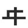
Looks like a bunch of pipes joined together = plumber = Mario USED IN: 降 年
mario
1575降
KOU - Mario descends into each town covered by rainfall and performs colon surgery
descend / rainfall / get out of vehicle
コウ
( を ) おりる
( が ) ふる
1576違
I - Luigi and I move differently and therefore he is wrong
different and therefore wrong
イ
( が ) ちがう
1582瞬
SHUN - George Michael is the twinkle in Bowser's eye and they spend a tiny bit of time in their love nest before being shunned by all
twinkle / tiny bit of time
シュン
( が ) またたく
1586料
RYOU - Re-order more rice and ingredients for the spice rack. I don't care about the fees!
ingredients / fees
リョウ
1590図
TO/ZU - I want to take off to the zoo, but first I need to get a map and my box of spices
diagram / map
ズ、ト
はかる
1592
Ballerina's legs
ballet / ballerina
1594更
KOU - The ballerina has to grow 1 batch of cocaine in the ricefield all over again
all over again
コウ
さらに
1596便
BEN/BIN - Ben is a person who has been going to the convenience store and back all over again
DESCRIPTION: This is pronounced BEN in convenience-related words, and BIN in mail-related words.convenience
ベン、ビン
たより
1599身
SHIN - Martin Sheen slashes my own flesh with his scissors
DESCRIPTION: Careful - this guy tends to use the KUN reading in jukugo(one's own) flesh
シン
み
1600窮
KYUU - I'm in trouble because I entered a cute girl's 'fleshy hole' with my 'bow'
to be in trouble
キュウ
( が ) きわまる
1603地
JI/CHI - Jesus ate cheesy scorpions from this area of land
DESCRIPTION: This is different from other "place" kanji like 「場」 and 「所」, because 「地」 doesn't emphasize that a particular activity done at the place. 「地」 instead emphasizes the land, the physical, geographical aspects of the spacearea
チ、ジ
1605施
SHI - She went in the direction of the charity shop and put her rifle into practice by shooting some scorpion invaders
put into practice / charity
シ
ほどこす
1608曽
DESCRIPTION: Since this is strong for ZOU.. Zorro gets horny working in the ricefield all day
usually means 'former' but is rarely usedget radical
1609僧
SOU - A buddhist monk is a person who gets so much respect DESCRIPTION: This is a somewhat formal kanji. Most people just use 「お坊さん」 for monk in casual conversation.
buddhist monk
ソウ
1613層
SOU - The layer of corpses gets so smelly DESCRIPTION: Suffix meaning layer, e.g. 「オゾン層」 means ozone layer
layer
ソウ
1614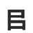
USED IN: 官 追 師 B for Bureaucracy
bureaucracy
1616館
KAN - Genghis Khan has an official building for the federal agents to eat at
official building
カン
1619⺌+⺍
Space invader because it looks like the cannon used in space invaders and flamingo because George Michael + little birds = Flamingo (gayest bird in the world which has been proven by Science) USED IN: 営 労 栄 学 覚 党 尚
space invader / flamingo
1625覚
KAKU - Michio Kaku needs to bear in mind that flamingos can see him
bear in mind
カク
( を ) さます
( が ) さめる
1630党
TOU - My older brother towed the space invader to the nearest political party
DESCRIPTION: Suffix meaning political party or factionpolitical party
トウ
1631尚
SHOU - Furthermore, I'll show you that the space invader wrapped his mouth around me
furthermore
ショウ
なお
1632償
SHOU - The person was compensated for not winning any prizes on the game show
compensate for
ショウ
つぐなう
1634常
JOU - Joe Stalin is bored of the space invader doing his usual dagger mouth trick
usual
ジョウ
つね
1635堂
DOU - The space invader came through the ground of the assembly hall and started eating all the dough with his big mouth
assembly hall
ドウ
1636善
ZEN - Zen buddhism teaches that a virtuous space invader will come and catch a sheep in its mouth
virtuous
ゼン
1637
USED IN: 周 高 商 橋 過 向
goatee
1639周
SHUU - I put on my shoes, trim my goatee and run the circumference of the earth
DESCRIPTION: Counter for laps or circuits, e.g. 「一周」 means once around or one lap.circumference
シュウ
まわり
1640調
CHOU - Maggy Chou says she's going to check out the circumference of the building
check out
チョウ
しらべる
1641高
KOU - The tall guy with the tophat and goatee was putting cocaine into his mouth
tall
コウ
たかい
( を ) たかめる
1644向
KOU - The guy with the goatee took a slice of my colon and turned to face the nurse
turn to face
コウ
( を ) むく
( に ) むかう
1645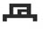
Eye of Sauron USED IN: 過 骨
sauron
1648過
KA - Sauron moves past the car driver with the goatee.. you might even say he surpasses him
surpass / too much
カ
( を ) すぎる
( で ) すごす
1649滑
KATSU - The floor was slippery with water so the cats slipped and broke their bones
slippery
カツ
すべる
1651
USED IN: 率 渋 楽 兆
Sparkles
1652率
RITSU - Eazy-E is a doorman at the Ritz hotel and only lets a ratio of 10:4 sparkly tophat wearers inside
ratio
リツ
1653渋
JUU - Jews don't like the bitter flavour of sparkling water so they stopped drinking it
bitter flavor
ジュウ
しぶい
1654楽
RAKU/GAKU - The tree raccoon got cool by enjoying some white sparklers
DESCRIPTION: Reads as 「らく」, which means comfort or ease, when used by itself.enjoy
ガク、ラク
たのしむ
たのしみ
1655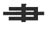
USED IN: 唐 書 筆 逮 康 棄 君 妻 争 事 兼
brush / fork
1663書
SHO - I spend my days writing on the ground of the shore with my brush
DESCRIPTION: Suffix meaning document or book, e.g. 「案内書」 means guidebook.write
ショ
かく
1664唐
TOU - I suddenly tripped over my toes and fell into the mouth of a cave and landed on a brush
suddenly
トウ
1667君
KUN - My buddy lives in a cocoon and has a brush in his mouth
DESCRIPTION: 「くん」 reading is used as a suffix about any little boys, but once they become high-school age, you generally only use it about your friends.buddy
クン
きみ
1672凄
SEI - They say my wife has a wonderful chill about her, I think it's terrible
凄艶【せいえん】weirdly beautifulwonderful / terrible
セイ
すごい
すさまじい
1675嫌
KEN - What does Ken think of dating 2 women concurrently? Hates the idea!
Hate
ケン
いや
きらい
1679 the idea嬢
JOU - Joe Stalin thinks a young lady should defer to saying nothing! This kanji probably should have been used along with 譲 (defer) - 'Saying nothing' because 言 isn't used
young lady
ジョウ
1680謙
KEN - Ken is concurrently modest and also a braggart as he says taunting words to his foes
modesty
ケン
1681建
KEN - Ken and Vin Diesel build a building using only 2 brushes
Mutant radical = Triple X (xXx) = Vin Dieselbuild
ケン
( を ) たてる
( が ) たつ
1682残
ZAN - Tarzan remains behind with the thief and Vlad the impaler
remain behind
ザン
( を ) のこす
( が ) のこる
1690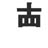
Bender from Futurama
Bender
1691壊
KAI - Bender breaks the cloth kite by crashing it into the ground
break
カイ
( を ) こわす
( が ) こわれる
1693懐
KAI - Bender feels nostalgia when he thinks of his heart shaped cloth kite
nostalgia
カイ
( に ) なつかしい
1694徳
TOKU - Bender tells you the virtue of going through life without ever toking a joint. It's good for the heart he says
virtue
トク
1695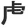
Simba from the Lion King
Simba
1696慮
RYO - Simba has consideration and thinks of others so he wants you to regulate your odor
consideration
リョ
1698虐
GYAKU - Simba oppresses (ギャク) people who use the letter E
Know any English words that correspond with gyaku? I don'toppress
ギャク
しいたげる
1700沈
CHIN - It's lame to sink your chin into someone's glass of water
sink
チン
( を ) しずめる
( が ) しずむ
1704就
SHUU - Drop your lame job in the capital and take a position at my shoe factory
take position
シュウ
( に ) つく
1705
USED IN: 刻 核 該 咳
conker
1707之
DESCRIPTION: 「之」 is an obsolete form of 「これ」, meaning this. Nowadays 「これ」 is almost always written in kana! However, it's still useful as a radical, so you should learn it USED IN: 乏 芝
this
1712堪
KAN - Genghis Khan can't tolerate people stealing enormous chunks of his land
tolerate
カン
たえる
1722概
GAI - The guy already understands the general concept behind trees.. they convert CO2 into O2 or something right?
general concept
ガイ
1727逆
GYAKU - The horny soldiers in the barracks oppress you for making them move in the opposite direction of girls
opposite
ギャク
( に ) さからう
1732似
JI - Jesus compares people who resemble him in the Jesus lookalike competition
resemble
ジ
( が / に ) にる
1734承
SHOU - Show me that you completely acknolwedge my threat or I'll dip you into the water 3 times!
acknowledge
ショウ
うけたまわる
1735蒸
JOU - Joe Stalin jumped completely into one flaming water pool of flowers because it was so humid
humid
ジョウ
( を ) むらす
( が ) むれる
1736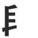
F for Freddy (also kinda looks like his scissor gloves)
Freddy Krueger
1737興
KYOU/KOU - Kyouko has the same interests as Freddy Krueger (they mirror each other), colon extraction and pie eating
interest
キョウ、コウ
1739暇
KA - In his free time or days off, Freddy goes for a ride in his car, running his mouth and waving his crotch out the window.. basically acting like a コドモ
free time
カ
ひま
1740隔
KAKU - Michio Kaku tells you to stop dissolving bugs and help him segregate the town
DESCRIPTION: Prefix meaning every other, e.g. 「隔週」 means every other week.segregate
カク
へだてる
1755拝
HAI - Hold your hands high as you worship the one and only World Tree
The 3 lines through the 'stick' will be world tree!worship
ハイ
おがむ
1758屁
HE - Eh? You farted? That's why the smell here could be compared to a rotting corpse!
fart
ヘ
おなら
1761寧
NEI - The crowned king has a peaceful heart and provides enough nets and nails for all to catch their own food. Yay or nay? What say ye
peaceful
ネイ
むしろ
1764婆
BA - The old woman riding on the wave is my bad ass grandmother
Old woman / Grandmother
バ
ばあ / ばば
1765箸
The professional eats chocolate with bamboo chopsticks! The onyomi is チョ but this kanji is always just はし or ばし！
Chopsticks
はし
1766鯉
The village fish is a carp! リ is the onyomi and only used in 養鯉[ようり] (Carp Breeding) as far as I know
Carp
こい
1768崎
KI - The promontory has a strange key which opens up a secret mountain
promontory / cape
キ
さき
1770釈
SHAKU - Shaq and the Rocker need an explantion on which oats are best for their diets
explanation
シャク
1773翻
HON - The honorable bird uses its feathers to flip in the air a number of times
flip
ホン
ひるがえ · る
ひるがえ · す
1774掲
KEI - It's ok to use your hand and put up a notice about your Sun Scent perfume
put up (a notice)
ケイ
かか・げる
1776鐘
SHOU - Everyone in the village is standing around the golden bell which is on show
bell
ショウ
かね
1780牧
BOKU - The director asks me politely (僕) not to mess with the cows on his pasture
pasture
ボク
まき
1784網
George Michael paid a horny construction worker to make a net out of string but the loser refused
Net
あみ
1789綱
KOU - The YMCA bind string together to make hawsers in order to raise money for a colon transplant charity The right part of this kanji will be known as YMCA! こう and つな are both used in jukugo
hawser
コウ
つな
1791喉
KOU - I want yu to pierce that person's mouth and throat with an arrow and then steal their colon Note - こう is mostly used in specialized medical words whereas のど is used with more common terms
throat
コウ
のど
1801戚
SEKI - A section of my relatives have become stuck-up and small minded
relative
セキ
いた・む
うれ・える
1803挨
AI - Aye, it's possible to push open a cow's anus using your fingers and an arrow
push open
アイ
ひら・く
1805拶
SATSU - The evening whence the KKK members clutch satsumas in their fingers is imminent
imminent
サツ
せま・る
1806漁
GYO - While I was fishing, a fish jumped out of the water and shouted "get your own spot, this 'ere's mine!"
Fishery
ギョ
あさ・る
1811賀
GA - Lady GaGa offered her congratulations after I added a shellfish to my collection
congratulations
ガ
1814耕
KOU - I plowed into a well in the middle of a cultivated field and ruptured my colon
cultivated
コウ
1816忌
KI - The key to being unpleasent is placing your own heart before others'
unpleasent
キ
い・まわしい
い・む
1825暫
ZAN - Xander waits temporarily for the sun to go down before he starts his murdering rampage
temporarily
ザン
しばら・く
1826陛
HEI - If you greet His Royal Highness with 'hey' then we will destroy your town until it can only be compared to dirt!
highness
ヘイ
1828隙
GEKI - The geek theorizes that 2 small suns will create a void and destroy his town
void
ゲキ
すき
ひま
1830拙
SETSU - He said to me that my clumsy fingers are why I'm not allowed to hand in the evidence
clumsy
セツ
つたな・い
1832将
SHOU - The commander shows the flailing girl how to glue a bird's nest together
commander
ショウ
まさ・に
ひきい・る
1844弔
CHOU - Maggy Chou offers her condolences for the one who was killed by the bow and arrow
condolences
チョウ
とむら・う
とぶら・う
1847樹
JU - A Timber Wolf sniffs at the samurai's juicy underwear as he is glued to a tree and eating beans
timber
ジュ
き
1850潟
To wrap up their E3 press conference, Sony exctracted 4 drops of water from a lagoon. Weird, I know The onyomi is seki and is used in 潟湖 (Sekiko = Lagoon). Most jukugo use かた or がた though.
lagoon
がた
かた
1858芳
HOU - There's a fragrant smell coming from the direction of the ho' with the flower
fragrant
ホウ
かなば・しい
1864峠
You take the above road and I'll take the below road and I'll get to the mountain pass before ye
mountain pass
とうげ
1867媒
BAI - You need to go through a mediator (pimp?) if you want to buy a certain woman
mediator
バイ
なこうど
1868征
SEI - It's not politically correct to say you want to go and subjugate another country
subjugate
セイ
1871矯
KYOU - Kyouko knows it will take more than just arrows to rectify the bridge
rectify
キョウ
た・める
1893拓
TAKU - Takuya Kimura picked up the first stone with his fingers and reclaimed the land
land reclamation
タク
ひら・く
1909朴
BOKU - He told me politely that it's simple to chop down a tree with nothing but toe nails
simple
ボク
ほう
ほお
1912翁
OU - Oh shit the venerable old man is going around in public wearing nothing but feathers
venerable old man
オウ
おきな
1924胴
DOU - The organs in my torso are made from the same dough you can buy at the supermarket
torso
ドウ
1926猟
RYOU - Instead of hunting, the cat just utilized his phone to re-order some baby birds
hunting
リョウ
かり
か・る
1928昧
MAI - I have not yet had my coffee today so I'm a little hazy
Mental state, not weatherhazy
マイ
くら・い
むさぼ・る
1930臼
KYUU - The cute girl at E3 was launching mortar rounds うす is also used in many jukugo so beware of that
mortar
キュウ
うす
うすづ・く
1932勅
CHOKU - The imperial order says you must choke the strong man with a bundle of sticks..
imperial order
チョク
いまし・める
みことのり
1935措
SO - A long time ago, someone used their fingers to set aside their ballistic lock-on rocket launcher sidewinder missle chromium nitrate star destroyer
set aside
ソ
お・く
1936傲
GOU - The director was proud he could point the person the the direction of the golden land: HOLLYWOOD, BABY
proud
ゴウ
おご・る
あなど・る
1940歓
KAN - Genghis Khan's swan has a lack of joy in its life (not Black Swan, Bored Swan)
joy
カン
よろこ・ぶ
1941喪
SOU - So many people mourn the loss of their mouth (1) by kicking someone in the nuts because they still have a mouth (2). It's a dirty fact of humanity も is also used in jukugo .. will have to learn case by case
mourning
ソウ
も
1942叔
SHUKU - My uncle shook his crotch above the little girl's head. Now you see why I avoid my extended family
叔父 = おじ and there are various examples like this where シュク is not used. Beware~extended family
シュク
叔父
1943淑
SHUKU - The water fell gracefully onto my extended family, who shook with happiness (after drought you see)
gracefully
シュク
しと・やか
1944窒
CHITSU - Cheats obstruct the sportsmanship of the competition by not waiting until the bell rings before digging their holes
obstruct
チツ
1946懲
CHOU - Maggy Chou showed no indication of heartbreak after facing her punishment
punish
チョウ
こ・りる
こ・らす
1947畏
I - I am apprehensive about giving up my one ricefield, just kick me in the nuts instead
apprehensive
イ
おそ・れる
かしこま・る
1949禍
KA - The Necromancer and Sauron caused a calamity when they crashed their cars
calamity
カ
わざわい
1951呪
JU - My older brother recited a spell with his mouth which made her show her juicy underwear
spell
ジュ
のろ・い
まじな・い
1955抹
MATSU - I use the tip of my finger to hit the delete key because I wrote mats instead of maths
delete
マツ
1956倣
HOU - The director tells the person to imitate a ho' with no sense of direction
imitate
ホウ
なら・う
1958彙
I - George Michael and I discussed fruit related lexicon. It was a good reciprical conversation
lexicon
イ
はりねずみ
1961併
HEI - Hey, I think all people should be promiscuous so we can unite together Horny + Open = Promiscuous
unite
ヘイ
あわ・せる
1962塀
BEI - The dirt wall prevented zombies from entering the promiscuous nudist bay
HEI by itself and BEI in jukugofence / wall
ベイ
1963坪
The size of your land is equal to a 2-mat area. In other words, 3.31 square metres - so you aren't worth very much
2-mat area
つぼ
1967綻
TAN - I failed to determine the length of G-string to use to get an optimal tan around my buttocks
fail
タン
ほころび・る
1969鶴
KAKU - Michio Kaku wants to rule the world with his knowledge about various birds, swans and storks つる/づる and かく are used in jukugo
stork
カク
つる
づる
1970暦
REKI - Ray keeps the sacred calendar inside a grove in the cave, out of sunlight
calendar
レキ
こよみ
りゃく
1972卸
Stop hurling wholesale products around the place! Your fingerprints will get you caught you know
wholesale
おろし
おろ・す
1975戯
GI - Gesus was emptied of blood by the Roman's spear. No more frolicking for him!
frolic
ギ
ざ・れる
じゃ・れる
1977閲
ETSU - Ezio (Assassin's Creed) told my horny older brother to peruse the gate for a secret key hole
peruse
エツ
けみ・する
1978捻
NEN - If your finger has been twisted like that for a whole year it's probably a cause for concern
twist
ネン
ねじ・る
ひね・る
1982墨
BOKU - Sumi told me politely that black ink is made from ground up earth
すみ and ぼく are both used in Jukugoblack ink
ボク
すみ
1989紡
BOU - Spinning a bowling ball into a different direction by using string is cheating
spinning
ボウ
つむ・ぐ
1990汎
HAN - Han Solo drank some mediocre water which caused a widespread disease through his body
widespread (pan-)
ハン
ただよ・う
ひろ・い
1991桑
SOU - So many kuwala (I know) bears enjoy rubbing their crotches against the mulberry tree
くわ is often used in jukugomulberry
ソウ
くわ
1993臆
OKU - Oh cool, being born under a full moon means you will be a timid person
timid
オク
むね
おくする
1997茎
KEI - Is it OK if this flower stem grows from the ground and wraps around your crotch? NO!
stem
ケイ
くき
1998悦
ETSU - My horny older brother Ezio had a feeling of ecstasy after his successful heart transplant
ecstasy
エツ
よろこ・ぶ
よろこば・す
1999敢
KAN - Genghis Khan had to get reconstructive ear surgery after a daring scene cast by the director
daring
カン
あ・えて
2001怨
EN/ON - I enjoyed our time together that evening but I feel resentment over leaving fingerprints on your heart.... EN and ON are both used in jukugo
resentment
エン・オン
うら・む
うら・めしい
2002柵
SAKU - Empty the books out of the sack and line them up against the wooden fence so I can count them
fence
サク
しがら・む
しがらみ
2004苗
BYOU - Plant this flower seedling in a ricefield and it will grow beyond your wildest dreams All of the readings are used in jukugo! Kunyomi and Onyomi.
seedling
ビョウ(ミョウ)
なえ
なわ-
2007貌
BOU - While bowling the skunk becomes self-conscious about his looks and tries to hide his white legs
That jobber on the left there is a skunklooks (appearance)
ボウ
かたち
かたどる
2010襟
KIN - Eric the ducky was keen to remove his collar but that is prohibited
キン and えり are both used in jukugocollar
キン
えり
2013鎮
CHIN - The truth is, I shot him in the chin with a golden tranquilizer dart
tranquilize
チン
しず・める
おさえ
2014勃
BOTSU - George Michael was defeated by the sudden power of 10 child robots
sudden
ボツ
おこ・る
にわかに
2015稲
TOU - In a stroke of misfortune, the baby bird fell from its nest towards the wheat and rice plants below. It is now only a shadow of its former self いな is used much more than とう in jukugo
rice plant
トウ
いね
いな
2016謡
YOU - The Noh Chanter says I have to remove the can from the nest but I just yawn and ignore him
noh chant
ヨウ
うたい
うと・う
2017迅
JIN - It's hard to move swiftly while wearing 10 pairs of jeans so I use my scissors to cut them off
swift
ジン
2018邦
HOU - The ho' tells me of the bent world tree which grows in a town in her home country
home country
ホウ
くに
2019奉
HOU - The ho' dedicates her life to drying the 3 stooges after they bathe
dedicate
ホウ
ほう・じる
まつ・る
2020傑
KETSU - Bowser ties the person to a tree for not showing excellence in his ketchup making
excellence
ケツ
すぐ・れる
2021濁
DAKU - Da Kool-Aid man throws his net into the water, trying to wrap up a bug that will cure his impurity
impurity
ダク
にご・る
にご・す
2022挫
ZA - I was just sitting there when all of a sudden a zebra attacked me and crushed my fingers
crush / break
ザ
くじ・く
くじ・ける
2024欄
RAN - I ran to the eastern gate and stuck my column of text to the wooden notice board
column (of text)
ラン
てすり
2025粛
SHUKU - I rigorously shook the brush to dislodge the rice from it. Now my lines will be straight (｜) instead of bent (ノ)
rigor
シュク
つつし・む
2029冥
MEI - George Michael may have spent 6 days meowing his way through the darkness
ミョウ is sometimes used in 熟語 but not as much as メイdarkness
メイ
くら・い
2030蔑
BETSU - I have nothing but disdain for anyone who drops their net of flowers and bets on becoming something more
disdain
ベツ
ないがし・ろ
さげす・む
2033髄
ZUI - I accidentally teleported into a zooey environment where my bone marrow became food for the lions Exist + Move = Teleport/er
marrow
ズイ
2034脊
SEKI - 2 people sat back to back on the spine section of the peaked roof, gazing at the moon
spine
セキ
せ
せい
2035諦
TEI / TAI - The emperor says he won't take the Thai person's resignation
resignation
テイ・タイ
あきら・める
2036擁
YOU - I have a picture of Eazy-E wearing a tophat while embracing a turkey in his hands... but he's yawning in it!
embrace
ヨウ
2037顕
KEN - Ken can see Sonic's head shining in the sun because it has such an obvious shape
obvious
ケン
あきら・か
あらわ・れる
2038堤
TEI - I thought for sure they would take me and bury me under some dirt embankment
embankment
テイ
つつみ
2040覆
FUKU - The straight up westerner had his carriage overturn and spill out all his clothes, so he returned it
cover
フク
おお・う
くつがえ・す
2041貪
TAN - Don now covets money and even stole a ton of it from a tanning salon TON sometimes turns to DON in jukugo
covet
タン・トン
2043采
SAI - The artist sighs because he can't get the colouring of the bird's tree nest correct
colouring
サイ
いろど・り
2045遷
SEN - I know it doesn't make sense, but I myself have transitioned to being a big straight up Western movie fan move -> movie is a stretch I know
transition
セン
うつ・る
うつ・す
2047稽
KEI - The gist of what he said is that it's OK, and not lame, to contemplate dropping your wheat harvesting job
contemplate
ケイ
かんが・える
とど・める
2048斎
SAI - The Buddhist sighs becuse modern culture enshrines into people that they should not show their true selves, and that they should follow a crooked ( ノ ) path rather than a straight (｜) one
enshrine
サイ
いつ・く
とき
2050啓
KEI - The director is keeping his mouth shut and won't disclose the location of the door until we bake him a cake
disclose
ケイ
ひら・く
さと・す
2051漆
SHITSU - The peaked wooden roof was covered with sheets so the rain water wouldn't wash the wet varnish off
varnish
シツ
うるし
2052叙
JO - I can't even begin to describe the excessive beauty of Angelina Jolie's crotch
describe
ジョ
つい・ず
ついで
2053殿
DEN - Lord Tono's corpse was thrown with the ten other corpses in the temple's den
This is the -どの suffix and appears as との/テン in some 熟語lord / temple
デン
との
どの
2054傍
BOU - There's a person wearing a crown and standing at the side of the bowling alley, facing my direction
side
ボウ
そば
はた
2056邸
TEI - Mel Gibson's take from the Braveheart movie afforded him the luxury of buying one mansion in this town
mansion
テイ
やしき
2057弊
HEI - George Michael condemned the evil director to hell where he may only ever eat rice and hay for the rest of eternity The radicals don't exactly match here but for me this is easier
evil
ヘイ
2058搾
SAKU - I put the key into a sack and used my fingers to squeeze it into a hole in the ground
squeeze
サク
しぼ・る
2059騰
TOU - Inflation caused the prices of horse organs and pig toes to skyrocket in horny heaven
inflation
トウ
あが・る
のぼ・る
2060沃
YOKU - Water from the heavens is like the yoke of an egg and gives fertility to the planet YOKU associates with fertility related words whereas YOU associates with iodine related words
fertility
ヨク・ヨウ
そそ・ぐ
2061践
SEN - Vlad the impaler carries through with cutting the legs off the senator
carry through
セン
ふ・む
2064堀
We must dig out the earth to yield a hole for the canal
HORI often turns to BORI in jukugocanal
ほり
2068託
TAKU - Takuya Kimura says he won't confide in you unless you give him mo' money モ kind looks like the right part of this kanji
confide
タク
かこつ・ける
かこ・つ
2073壱
ICHI - Neo says it's ichy when he goes for a number one
Meaning: one (used in legal documents)neo
イチ・イツ
2076窯
YOU - The sheep yawns before being pulled from the hole and thrown onto the flame stove
stove
ヨウ
かま
2077把
HA - WA - The Lone Ranger wants to get better at grasping his hat with his fingers
HA is used for words with grasping as the meaning and WA is used for words with bundle as the meaninggrasping
ハ・ワ
たば
2080藻
SOU - The wooden products containing the flowers became so wet and full of seaweed after the tsunami
seaweed
ソウ
も
2081随
ZUI - Please comply with the town's rules and don't teleport into any zooey areas
comply
ズイ
したが・う
まにま・に
2084衷
CHUU - My 10 inmost feelings are all pitiful, which is why I choose not to share them
inmost
チュウ
2088塁
RUI - Louis C.K tills the soil of the ricefield by the fort until he sparkles with sweat
fort
ルイ
とりで
2089瞳
DOU - The kid got some dough in his eye while baking and it caused his pupil to dilate
pupil
ドウ
ひとみ
2090寡
KA - The king used his sword to carve off the legs of 100 people from a racial minority
Means widow (やもめ) by itselfminority
カ
やもめ
2091塞
SOKU - My socks block the cold but not chilly ground from freezing my feet off The 音読み サイ is used in 要塞 and 防塞 (Fort related words)
block
ソク
ふさ・ぐ
とりで
2098宵
SHOU - There is a TV show that comes on in the wee hours of the night and it's about a king who eats carrots
wee hours
ショウ
よい
2102唆
SA - Each time I go to San Andreas someone tries to instigate me putting a whole moo-cow leg into my mouth
instigate
サ
そそ・る
そそのか・す
2103款
KAN - Genghis Khan shows a lack of interest in being in collusion with the samurai
collusion
カン
2104糾
KYUU - The cute girl twisted the rope tighter until she could ascertain the 4 key details from the prisoner
ascertain / twist
キュウ
ただ・す
あざな・う
2106刹
SETSU/SATSU - He said to me that he cut a satsuma tree with his saber and it fell across the temple of time, crushing it instantly セツ is used with words relating to time(instant/moment) and サツ is used in words relating to temples
temple of time
セツ・サツ
2109隻
SEKI - A section of the vessel smelt like turkey crotch
(counter for ships) 一隻 = 1 ship/boatvessel
セキ
2112悠
YUU - You really think one person can maintain permanence in this fickle director's heart?
permanence
ユウ
2118墾
KON - The skunk is good at conning others into ground-breaking ceremonies -- what a useless skill to have
ground-breaking
コン
2119隆
RYUU - Ryu devotes his life to making sure each town he visits gains prosperity
prosperity
リュウ
2121丹
TAN - I got a rusty colored tan on my knee by sunbathing for too long on my boat
に is used in words relating to the colorrusty color
タン
に
2122江
KOU - My colon burst like a water balloon while constructing a creek in Edo
Edo (江戸) is the old name for Tokyo (東京)creek / Edo
コウ
え
2123旋
SEN - Is it correct to have sensors in newly made rifles when so many are already in rotation and you can be shot from any direction?
rotation
セン
2124虹
KOU - The bug constructed a rainbow inside my colon にじ is used in jukugo as well as コウ
rainbow
コウ
にじ
2125嘱
SHOKU - This may come as a shock, but I have been entrusted with secret information affiliated with a rival mouthwash organization
entrust
ショク
しょく・する
2126罷
HI - Despite his talents, he wanted to withdraw from the net making industry
withdraw (from work)
ヒ
まか・り
や・める
2128詣
KEI - The gist of what he's saying is that it's OK to take a pilgrimage to the holy land
pilgrimage
ケイ
もう・でる
2129澄
CHOU - Maggy Chou climbed a mountain in the wet rain and was rewarded with a serene view from the peak
serene
チョウ
す・ます
す・む
2132宜
GI - Gesus was the one who told Abe Lincoln it would be good to wear a tall hat like a crown
good / suitable
ギ
よろ・しい
よろ・しく
2133